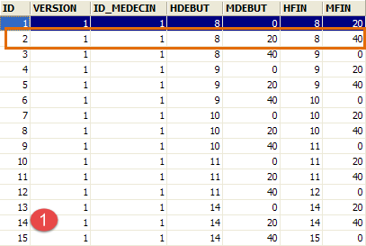
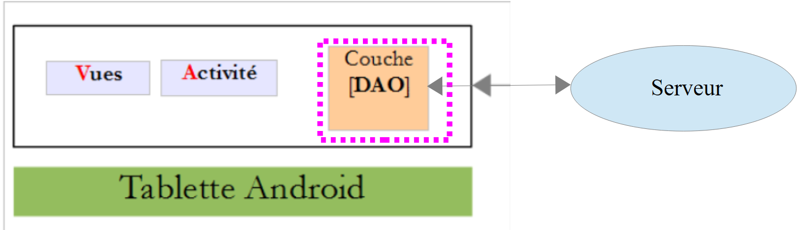
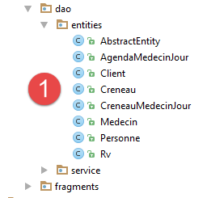
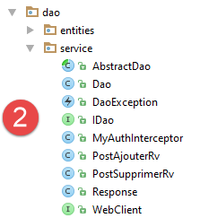
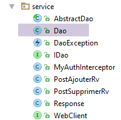
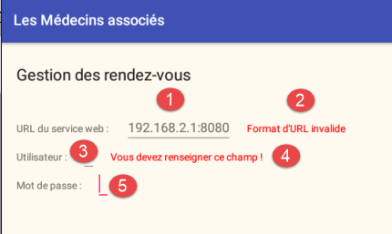
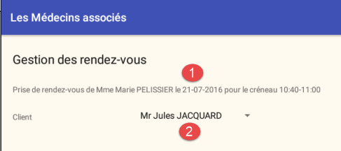

3. Fallstudie – Terminverwaltung
3.1. Das Projekt
Im Dokument [AngularJS / Spring 4 Tutorial] wurde eine Client/Server-Anwendung zur Verwaltung von Arztterminen entwickelt. Wir werden dieses Dokument im Folgenden als [rdvmedecins-angular] bezeichnen. Die Anwendung verfügte über zwei Arten von Clients:
- einen HTML/CSS/JS-Client;
- einen Android-Client;
Der Android-Client wurde mithilfe des [Cordova]-Tools automatisch aus der HTML-Version des Clients generiert. Das Ziel dieses Projekts ist es, diesen Android-Client manuell unter Verwendung der in den vorangegangenen Kapiteln erworbenen Kenntnisse neu zu erstellen.
Beachten Sie einen wichtigen Unterschied zwischen den beiden Lösungen:
- Die von uns zu erstellende Lösung funktioniert nur auf Android-Tablets;
- in der [rdvmedecins-angular]-Version funktioniert der mobile Web-Client (HTML/CSS/JS) auf jeder Plattform (Android, iOS, Windows);
3.2. Die Ansichten des Android-Clients
Es gibt vier Ansichten.
Konfigurationsansicht

Ansicht zur Auswahl von Arzt und Termin

Ansicht zur Auswahl eines Terminzeitfensters

Ansicht zur Auswahl des Terminkunden

3.3. Projektarchitektur
Wir verwenden eine Client/Server-Architektur, die der in Beispiel [Beispiel-15] (siehe Abschnitt 1.16) dieses Dokuments ähnelt:

Die asynchrone Kommunikation zwischen Client und Server wird mithilfe der RxAndroid-Bibliothek abgewickelt.
3.4. Die Datenbank
Sie spielt in diesem Dokument keine wesentliche Rolle. Wir stellen sie zu Informationszwecken zur Verfügung. Wir werden sie [ dbrdvmedecins] nennen. Es handelt sich um eine MySQL5-Datenbank mit vier Tabellen:
 |
3.4.1. Die Tabelle [MEDECINS]
Sie enthält Informationen zu den Ärzten, die von der Anwendung [RdvMedecins] verwaltet werden.
 |  |
- ID: die ID-Nummer des Arztes – der Primärschlüssel der Tabelle
- VERSION: Eine Zahl, die die Version der Zeile in der Tabelle angibt. Diese Zahl wird bei jeder Änderung an der Zeile um 1 erhöht.
- LAST_NAME: der Nachname des Arztes
- FIRST_NAME: der Vorname des Arztes
- TITLE: Anrede (Frau, Frau, Herr)
3.4.2. Die Tabelle [CLIENTS]
Die Patienten der verschiedenen Ärzte werden in der Tabelle [CLIENTS] gespeichert:
 |  |
- ID: die ID-Nummer des Kunden – der Primärschlüssel der Tabelle
- VERSION: Nummer, die die Version der Zeile in der Tabelle angibt. Diese Nummer wird bei jeder Änderung an der Zeile um 1 erhöht.
- LAST NAME: der Nachname des Kunden
- VORNAME: der Vorname des Kunden
- TITLE: Anrede (Frau, Frau, Herr)
3.4.3. Die Tabelle [SLOTS]
Sie listet die Zeitfenster auf, in denen Termine verfügbar sind:
 |
 |  |  |
- ID: ID-Nummer für den Zeitblock – Primärschlüssel der Tabelle (Zeile 8)
- VERSION: Nummer, die die Version der Zeile in der Tabelle angibt. Diese Nummer wird bei jeder Änderung an der Zeile um 1 erhöht.
- DOCTOR_ID: ID-Nummer, die den Arzt identifiziert, zu dem dieses Zeitfenster gehört – Fremdschlüssel auf die Spalte DOCTORS(ID).
- START_TIME: Startzeit des Zeitfensters
- MSTART: Startminute des Zeitfensters
- HFIN: Endzeit des Zeitfensters
- MFIN: Endminuten des Zeitfensters
Die zweite Zeile der Tabelle [SLOTS] (siehe [1] oben) gibt beispielsweise an, dass Zeitfenster Nr. 2 um 8:20 Uhr beginnt und um 8:40 Uhr endet und der Ärztin Nr. 1 (Frau Marie PELISSIER) zugeordnet ist.
3.4.4. Die Tabelle [RV]
Sie listet die für jeden Arzt vereinbarten Termine auf:
 |  |
- ID: eindeutige Kennung für den Termin – Primärschlüssel
- DAY: Tag des Termins
- SLOT_ID: Zeitfenster des Termins – Fremdschlüssel auf das Feld [ID] der Tabelle [SLOTS] – bestimmt sowohl das Zeitfenster als auch den beteiligten Arzt.
- CUSTOMER_ID: die Kunden-ID, für die die Reservierung vorgenommen wird – ein Fremdschlüssel auf dem Feld [ID] in der Tabelle [CUSTOMERS]
Diese Tabelle unterliegt einer Eindeutigkeitsbeschränkung für die Werte der verknüpften Spalten (DAY, SLOT_ID):
Wenn eine Zeile in der Tabelle [RV] den Wert (DAY1, SLOT_ID1) für die Spalten (DAY, SLOT_ID) enthält, darf dieser Wert an keiner anderen Stelle vorkommen. Andernfalls würde dies bedeuten, dass zwei Termine zur gleichen Zeit für denselben Arzt gebucht wurden. Aus Sicht der Java-Programmierung löst der JDBC-Treiber der Datenbank in diesem Fall eine SQLException aus.
Die Zeile mit der ID 3 (siehe [1] oben) bedeutet, dass am 23.08.2006 ein Termin für Slot Nr. 20 und Kunde Nr. 4 gebucht wurde. Die Tabelle [SLOTS] gibt an, dass Slot Nr. 20 dem Zeitfenster 16:20 – 16:40 Uhr entspricht und zur Ärztin Nr. 1 (Frau Marie PELISSIER) gehört. Die Tabelle [CLIENTS] gibt an, dass Patient Nr. 4 Frau Brigitte BISTROU ist.
3.4.5. Erstellen der Datenbank
Um die Tabellen zu erstellen und zu füllen, können Sie das Skript [dbrdvmedecins.sql] verwenden, das Sie im Beispielarchiv |HIER| finden.
 |
Gehen Sie bei [WampServer] (siehe Abschnitt 6.15) wie folgt vor:
 |  |
- Klicken Sie in [1] auf das Symbol [WampServer] und wählen Sie die Option [PhpMyAdmin] [2],
- in [3] wählen Sie im sich öffnenden Fenster den Link [Datenbanken] aus,
 |
- in [4-6] importieren Sie eine SQL-Datei,
 |  |  |
- in [7] das SQL-Skript auswählen und in [8] ausführen,
- in [9] wurden die Datenbanktabellen erstellt. Folgen Sie einem der Links,
 |
- in [10], der Tabelleninhalt.
Wir werden nicht mehr auf diese Datenbank zurückkommen, aber der Leser ist eingeladen, ihre Entwicklung im Verlauf der Tests zu verfolgen, insbesondere wenn die Anwendung nicht funktioniert.
3.5. Der Webserver / JSON
Hier konzentrieren wir uns auf den Server [1]. Wir werden ihn nicht weiter ausführen. Er wurde im Dokument [Spring MVC and Thymeleaf by Example] ausführlich beschrieben. Interessierte Leser können dort nachschlagen. Er wurde wie der Server in Beispiel 15 entwickelt. Sein Quellcode ist in den Beispielen enthalten. Hier werden wir seine Binärdatei verwenden:
 |
- [rdvmedecins-server-all-1.0.jar] ist die Server-Binärdatei;
3.5.1. Implementierung
Wechseln Sie in einem Befehlsfenster in den Ordner, der die Server-Binärdatei enthält:
...\rdvmedecins>dir
Le volume dans le lecteur D s’appelle Données
Le numéro de série du volume est 7A34-AE5F
Répertoire de D:\data\istia-1516\projets\dvp-android-studio\rdvmedecins
09/06/2016 10:50 <DIR> .
09/06/2016 10:50 <DIR> ..
06/07/2014 16:36 7 631 dbrdvmedecins.sql
08/06/2016 16:31 <DIR> rdvmedecins-client
08/06/2016 16:22 <DIR> rdvmedecins-server
08/06/2016 16:23 29 618 709 rdvmedecins-server-all-1.0.jar
Um den Server zu starten, geben Sie anschließend den folgenden Befehl ein (das MySQL-DBMS muss bereits laufen):
...\rdvmedecins>java -jar rdvmedecins-server-all-1.0.jar
. ____ _ __ _ _
/\\ / ___'_ __ _ _(_)_ __ __ _ \ \ \ \
( ( )\___ | '_ | '_| | '_ \/ _` | \ \ \ \
\\/ ___)| |_)| | | | | || (_| | ) ) ) )
' |____| .__|_| |_|_| |_\__, | / / / /
=========|_|==============|___/=/_/_/_/
:: Spring Boot :: (v1.0)
10:55:48.617 [main] INFO rdvmedecins.boot.Boot - Starting Boot v1.0 on st-PC (D:\data\istia-1516\projets\dvp-android-studio\rdvmedecins\rdvmedecins-server-all-1.0.jar started by st in D:\data\istia-1516\projets\dvp-android-studio\rdvmedecins)
10:55:48.621 [main] INFO rdvmedecins.boot.Boot - No active profile set, falling back to default profiles: default
10:55:48.662 [main] INFO o.s.b.c.e.AnnotationConfigEmbeddedWebApplicationContext - Refreshing org.springframework.boot.context.embedded.AnnotationConfigEmbeddedWebApplicationContext@7085bdee: startup date [Thu Jun 09 10:55:48 CEST 2016]; root of context hierarchy
10:55:49.948 [main] INFO o.s.b.c.e.t.TomcatEmbeddedServletContainer - Tomcat initialized with port(s): 8080 (http)
juin 09, 2016 10:55:50 AM org.apache.catalina.core.StandardService startInternal
INFOS: Starting service Tomcat
juin 09, 2016 10:55:50 AM org.apache.catalina.core.StandardEngine startInternal
INFOS: Starting Servlet Engine: Apache Tomcat/8.0.33
juin 09, 2016 10:55:50 AM org.apache.catalina.core.ApplicationContext log
INFOS: Initializing Spring embedded WebApplicationContext
10:55:50.255 [localhost-startStop-1] INFO o.s.web.context.ContextLoader - Root
WebApplicationContext: initialization completed in 1596 ms
...
10:55:55.765 [localhost-startStop-1] INFO o.s.s.web.DefaultSecurityFilterChain
- Creating filter chain: ...]
10:55:55.785 [localhost-startStop-1] INFO o.s.b.c.e.ServletRegistrationBean - Mapping servlet: 'dispatcherServlet' to [/*]
10:55:55.791 [localhost-startStop-1] INFO o.s.b.c.e.FilterRegistrationBean - Mapping filter: 'springSecurityFilterChain' to: [/*]
...
10:55:56.249 [main] INFO o.s.w.s.m.m.a.RequestMappingHandlerMapping - Mapped "{[/getAllCreneaux/{idMedecin}],methods=[GET],produces=[application/json;charset=UTF-8]}" onto public java.lang.String rdvmedecins.controllers.RdvMedecinsController.getAllCreneaux(long,javax.servlet.http.HttpServletResponse,java.lang.String)
throws com.fasterxml.jackson.core.JsonProcessingException
10:55:56.252 [main] INFO o.s.w.s.m.m.a.RequestMappingHandlerMapping - Mapped "{[/getRvMedecinJour/{idMedecin}/{jour}],methods=[GET],produces=[application/json;charset=UTF-8]}" onto public java.lang.String rdvmedecins.controllers.RdvMedecinsController.getRvMedecinJour(long,java.lang.String,javax.servlet.http.HttpServletResponse,java.lang.String) throws com.fasterxml.jackson.core.JsonProcessingException
10:55:56.255 [main] INFO o.s.w.s.m.m.a.RequestMappingHandlerMapping - Mapped "{[/getCreneauById/{id}],methods=[GET],produces=[application/json;charset=UTF-8]}" onto public java.lang.String rdvmedecins.controllers.RdvMedecinsController.getCreneauById(long,javax.servlet.http.HttpServletResponse,java.lang.String) throws
com.fasterxml.jackson.core.JsonProcessingException
10:55:56.257 [main] INFO o.s.w.s.m.m.a.RequestMappingHandlerMapping - Mapped "{[/ajouterRv],methods=[POST],consumes=[application/json;charset=UTF-8],produces=[application/json;charset=UTF-8]}" onto public java.lang.String rdvmedecins.controllers.RdvMedecinsController.ajouterRv(rdvmedecins.models.PostAjouterRv,javax.servlet.http.HttpServletResponse,java.lang.String) throws com.fasterxml.jackson.core.JsonProcessingException
10:55:56.259 [main] INFO o.s.w.s.m.m.a.RequestMappingHandlerMapping - Mapped "{[/getAllClients],methods=[GET],produces=[application/json;charset=UTF-8]}" onto
public java.lang.String rdvmedecins.controllers.RdvMedecinsController.getAllClients(javax.servlet.http.HttpServletResponse,java.lang.String) throws com.fasterxml.jackson.core.JsonProcessingException
10:55:56.261 [main] INFO o.s.w.s.m.m.a.RequestMappingHandlerMapping - Mapped "{[/getClientById/{id}],methods=[GET],produces=[application/json;charset=UTF-8]}"
onto public java.lang.String rdvmedecins.controllers.RdvMedecinsController.getClientById(long,javax.servlet.http.HttpServletResponse,java.lang.String) throws com.fasterxml.jackson.core.JsonProcessingException
10:55:56.264 [main] INFO o.s.w.s.m.m.a.RequestMappingHandlerMapping - Mapped "{[/getMedecinById/{id}],methods=[GET],produces=[application/json;charset=UTF-8]}" onto public java.lang.String rdvmedecins.controllers.RdvMedecinsController.getMedecinById(long,javax.servlet.http.HttpServletResponse,java.lang.String) throws com.fasterxml.jackson.core.JsonProcessingException
10:55:56.266 [main] INFO o.s.w.s.m.m.a.RequestMappingHandlerMapping - Mapped "{[/getRvById/{id}],methods=[GET],produces=[application/json;charset=UTF-8]}" onto public java.lang.String rdvmedecins.controllers.RdvMedecinsController.getRvById(long,javax.servlet.http.HttpServletResponse,java.lang.String) throws com.fasterxml.jackson.core.JsonProcessingException
10:55:56.268 [main] INFO o.s.w.s.m.m.a.RequestMappingHandlerMapping - Mapped "{[/getAllMedecins],methods=[GET],produces=[application/json;charset=UTF-8]}" onto public java.lang.String rdvmedecins.controllers.RdvMedecinsController.getAllMedecins(javax.servlet.http.HttpServletResponse,java.lang.String) throws com.fasterxml.jackson.core.JsonProcessingException
10:55:56.270 [main] INFO o.s.w.s.m.m.a.RequestMappingHandlerMapping - Mapped "{[/supprimerRv],methods=[POST],consumes=[application/json;charset=UTF-8],produces=[application/json;charset=UTF-8]}" onto public java.lang.String rdvmedecins.controllers.RdvMedecinsController.supprimerRv(rdvmedecins.models.PostSupprimerRv,javax.servlet.http.HttpServletResponse,java.lang.String) throws com.fasterxml.jackson.core.JsonProcessingException
10:55:56.273 [main] INFO o.s.w.s.m.m.a.RequestMappingHandlerMapping - Mapped "{[/authenticate],methods=[GET],produces=[application/json;charset=UTF-8]}" onto public java.lang.String rdvmedecins.controllers.RdvMedecinsController.authenticate(javax.servlet.http.HttpServletResponse,java.lang.String) throws com.fasterxml.jackson.core.JsonProcessingException
10:55:56.276 [main] INFO o.s.w.s.m.m.a.RequestMappingHandlerMapping - Mapped "{[/getAgendaMedecinJour/{idMedecin}/{jour}],methods=[GET],produces=[application/json;charset=UTF-8]}" onto public java.lang.String rdvmedecins.controllers.RdvMedecinsController.getAgendaMedecinJour(long,java.lang.String,javax.servlet.http.HttpServletResponse,java.lang.String) throws com.fasterxml.jackson.core.JsonProcessingException
...
10:55:56.681 [main] INFO o.s.b.c.e.t.TomcatEmbeddedServletContainer - Tomcat started on port(s): 8080 (http)
10:55:56.686 [main] INFO rdvmedecins.boot.Boot - Started Boot in 8.231 seconds
Der Server zeigt zahlreiche Protokolle an. Wir haben nur diejenigen aufgenommen, die für das Verständnis des oben beschriebenen Vorgangs relevant sind:
- Zeilen 14–18: Ein eingebetteter Tomcat-Server wird auf Port 8080 des Rechners gestartet. Dieser Server führt die Webanwendung zur Terminverwaltung aus. Bei dieser Anwendung handelt es sich eigentlich um einen Webdienst/JSON: Sie wird über URLs abgefragt und antwortet mit der Übermittlung einer JSON-Zeichenkette;
- Zeile 24: Der Webservice wird mithilfe des [Spring Security]-Frameworks gesichert. Der Zugriff auf die URLs des Webservices erfolgt nach Authentifizierung;
- Zeilen 29–44: die vom Webservice bereitgestellten URLs;
Wir werden näher darauf eingehen.
3.5.2. Sicherung des Webdienstes
Die vom Webdienst bereitgestellten URLs sind gesichert. Der Server erwartet in der HTTP-Anfrage des Clients den folgenden Header:
Der erwartete Code ist die Base64-Kodierung [http://fr.wikipedia.org/wiki/Base64] der Zeichenfolge „username:password“. Im Ausgangszustand akzeptiert der Webdienst nur einen Benutzer namens „admin“ mit dem Passwort „admin“. Für diesen speziellen Benutzer lautet der oben genannte Header wie folgt:
Um diesen HTTP-Header zu senden, verwenden wir den HTTP-Client [Advanced Rest Client], ein Chrome-Browser-Plugin (siehe Abschnitt 6.13). Wir werden die verschiedenen vom Webdienst bereitgestellten URLs manuell testen, um zu verstehen:
- welche Parameter die URL erwartet;
- die genaue Art der Antwort;
3.5.3. Liste der Ärzte
Die URL [/getAllMedecins] ruft die Liste der Ärzte ab:
 |
- in [1] die abgefragte URL;
- in [2] die für diese Anfrage verwendete HTTP-Methode;
- in [3] der HTTP-Sicherheitsheader des Benutzers (admin, admin);
- in [4] wird die HTTP-Anfrage gesendet;
Die Antwort des Servers lautet wie folgt:
 |
- in [5], die formatierte JSON-Antwort vom Server;
 |
- in [6] dieselbe Antwort im Rohformat;
Die Darstellung in [5] macht die Struktur der Antwort besser erkennbar. Alle Antworten des Webdienstes sind Instanzen der folgenden [Response]-Klasse:
package rdvmedecins.android.dao.service;
import java.util.List;
public class Response<T> {
// ----------------- properties
// operation status
private int status;
// any error messages
private List<String> messages;
// the body of the reply
private T body;
// manufacturers
public Response() {
}
public Response(int status, List<String> messages, T body) {
this.status = status;
this.messages = messages;
this.body = body;
}
// getters and setters
...
}
- Zeile 9: Der Antwortstatus. Der Wert 0 bedeutet, dass kein Fehler aufgetreten ist; andernfalls ist ein Fehler aufgetreten;
- Zeile 11: eine Liste von Fehlermeldungen, falls ein Fehler aufgetreten ist;
- Zeile 13: die vom Client tatsächlich erwartete Antwort;
Die Antwort auf die URL [/getAllMedecins] ist eine JSON-Zeichenkette eines Objekts vom Typ [Response<List<Medecin>>]. Die Klasse [Medecin] sieht wie folgt aus:
package rdvmedecins.android.dao.entities;
public class Medecin extends Personne {
// default builder
public Medecin() {
}
// builder with parameters
public Medecin(String titre, String nom, String prenom) {
super(titre, nom, prenom);
}
public String toString() {
return String.format("Medecin[%s]", super.toString());
}
}
Zeile 3: Die Klasse [Doctor] erweitert die folgende Klasse [Person]:
package rdvmedecins.android.dao.entities;
public class Personne extends AbstractEntity {
// attributes of a person
private String titre;
private String nom;
private String prenom;
// default builder
public Personne() {
}
// builder with parameters
public Personne(String titre, String nom, String prenom) {
this.titre = titre;
this.nom = nom;
this.prenom = prenom;
}
// toString
public String toString() {
return String.format("Personne[%s, %s, %s, %s, %s]", id, version, titre, nom, prenom);
}
// getters and setters
...
}
Zeile 3: Die Klasse [Person] erweitert die folgende Klasse [AbstractEntity]:
package rdvmedecins.android.dao.entities;
import java.io.Serializable;
public class AbstractEntity implements Serializable {
private static final long serialVersionUID = 1L;
protected Long id;
protected Long version;
@Override
public int hashCode() {
int hash = 0;
hash += (id != null ? id.hashCode() : 0);
return hash;
}
// initialization
public AbstractEntity build(Long id, Long version) {
this.id = id;
this.version = version;
return this;
}
@Override
public boolean equals(Object entity) {
String class1 = this.getClass().getName();
String class2 = entity.getClass().getName();
if (!class2.equals(class1)) {
return false;
}
AbstractEntity other = (AbstractEntity) entity;
return this.id == other.id;
}
// getters and setters
...
}
Letztendlich sieht die Struktur eines [Doctor]-Objekts wie folgt aus:
[Long id; Long version; String titre; String nom; String prenom;]
und die von [Response<List<Doctor>>] wie folgt:
Im weiteren Verlauf werden wir diese Kurzdefinitionen verwenden, um die Antwort des Servers zu beschreiben. Außerdem werden wir vorerst keine Screenshots mehr einfügen. Schauen Sie sich einfach noch einmal an, was wir gerade behandelt haben. Wir werden wieder auf Screenshots zurückkommen, wenn es an der Zeit ist, eine POST-Anfrage zu stellen. Außerdem werden wir ein Ausführungsbeispiel im folgenden Format präsentieren:
3.5.4. Kundenliste
|
Beispiel:
3.5.5. Liste der freien Termine bei einem Arzt
|
- [idMedecin]: ID des Arztes, für den Sie die Terminplätze wünschen;
- [startTime]: Startzeit des Termins;
- [start_time]: Beginn der Konsultation;
- [hfin]: Endzeit der Konsultation;
- [endmin]: Endzeit der Konsultation in Minuten;
Für einen Zeitblock zwischen 10:20 und 10:40 haben wir [startet, startet, endet, endet] = [10, 20, 10, 40].
Beispiel:
3.5.6. Liste der Arzttermine
|
- [idMedic] : Kennung des Arztes, für den Termine angefragt werden;
- URL [day]: Tag der Termine im Format „JJJJ-MM-TT“;
- Antwort [day]: wie oben, jedoch in Form eines Java-Datums;
- [client]: der Kunde für den Termin. Seine Struktur wurde bereits beschrieben;
- [idClient]: die Kennung des Kunden;
- [slot]: der Terminzeitpunkt. Seine Struktur wurde bereits beschrieben;
- [slotId]: die Slot-Kennung;
Beispiel:
3.5.7. Der Terminkalender eines Arztes
|
- [doctorId]: Kennung des Arztes, dessen Termine gesucht werden;
- URL [day] : Tag der Termine im Format „JJJJ-MM-TT“ ;
- [calendar]: Kalender des Arztes;
- [doctor]: der betreffende Arzt. Seine Struktur wurde zuvor definiert;
- Response [day]: der Tag des Kalenders im Format eines Java-Datums;
- [doctorDaySlots]: ein Array von Elementen vom Typ [DoctorDaySlot];
- [slot]: ein Terminfenster. Seine Struktur wurde zuvor beschrieben;
- [Termin]: ein Termin. Seine Struktur wurde bereits zuvor beschrieben;
Beispiel:
|
Wir haben den Fall hervorgehoben, in dem ein Termin in dem Zeitfenster liegt, sowie den Fall, in dem dies nicht der Fall ist.
3.5.8. Arzt anhand der ID suchen
|
- [doctorId]: die ID des Arztes;
Beispiel 1:
Beispiel 2:
3.5.9. Client nach ID abrufen
|
- [idClient]: die Client-ID;
Beispiel 1:
Beispiel 2:
3.5.10. Buchen Sie einen Termin mit Ihrer ID
|
- [slotId]: die Slot-ID;
Beispiel 1:
Beachten Sie, dass die Antwort nicht den Arzt enthält, dem der Termin gehört, sondern nur dessen ID.
Beispiel 2:
3.5.11. Termin anhand der ID abrufen
|
- [idRv]: die Termin-ID;
Beispiel 1:
Beachten Sie, dass die Antwort weder den Kunden noch den Terminplatz enthält, sondern nur deren Identifikatoren.
Beispiel 2:
3.5.12. Termin hinzufügen
Über die URL [/addAppointment] können Sie einen Termin hinzufügen. Die für diesen Vorgang erforderlichen Informationen (Tag, Zeitfenster und Kunde) werden über eine HTTP-POST-Anfrage übermittelt. Wir zeigen Ihnen, wie Sie diese Anfrage mit dem Tool [Advanced Rest Client] erstellen.

- in [1] die abgefragte URL;
- in [2] wird sie über eine POST-Anfrage abgefragt;
- in [3-4] geben wir dem Server an, dass die gesendeten Werte im JSON-Format vorliegen;
- in [4] der HTTP-Authentifizierungsheader;
- in [5] die über die POST-Anfrage gesendeten Informationen. Dies ist eine JSON-Zeichenkette, die Folgendes enthält:
- [day]: den Tag des Termins im Format „yyyy-mm-dd“,
- [idClient]: die ID des Kunden, für den der Termin vereinbart wird,
- [idCreneau]: die Kennung des Terminzeitfensters. Da ein Zeitfenster zu einem bestimmten Arzt gehört, bezieht sich dies auch auf den Arzt;
- in [6] wird die Anfrage gesendet;
Die gesendete JSON-Zeichenkette entspricht dem folgenden [PostAjouterRv]-Objekt:
public class PostAjouterRv {
// pOST DATA
private String jour;
private long idClient;
private long idCreneau;
// manufacturers
public PostAjouterRv() {
}
public PostAjouterRv(String jour, long idCreneau, long idClient) {
this.jour = jour;
this.idClient = idClient;
this.idCreneau = idCreneau;
}
// getters and setters
...
}
Die Antwort des Servers ist vom Typ [Response<Rv>] [int status; List<String> messages; Rv rv], wobei [rv] der hinzugefügte Termin ist.
Die Antwort des Servers auf die obige Anfrage lautet wie folgt:
 |
Beachten Sie, dass einige Informationen nicht enthalten sind [idClient, idCreneau], diese finden sich jedoch in den Feldern [client] und [creneau]. Die wichtige Information ist die ID des hinzugefügten Termins (209). Der Webdienst hätte einfach nur diese eine Information zurückgeben können.
3.5.13. Termin löschen
Dieser Vorgang wird ebenfalls über eine POST-Anfrage ausgeführt:
|
Der gesendete Wert ist die JSON-Zeichenkette eines Objekts vom Typ [PostSupprimerRv] wie folgt:
public class PostSupprimerRv {
// pOST DATA
private long idRv;
// manufacturers
public PostSupprimerRv() {
}
public PostSupprimerRv(long idRv) {
this.idRv = idRv;
}
// getters and setters
...
}
- Zeile 4: [idRv] ist die ID des zu löschenden Termins.
Beispiel 1:
Termin Nr. 209 wurde erfolgreich gelöscht, da [status=0].
Beispiel 2:
3.6. Der Android-Client
Nachdem der Server [1] nun ausführlich beschrieben wurde und läuft, werden wir uns den Android-Client [2] ansehen.
3.6.1. Projektarchitektur in Android Studio
Das Projekt nutzt die Architektur des [client-android-skel]-Projekts (siehe Abschnitt 1.17). In der oben dargestellten Architektur des Android-Clients gibt es drei unterschiedliche Schichten:
- die [DAO]-Schicht, die für die Kommunikation mit dem Webdienst zuständig ist;
- die [Ansichten], die für die Kommunikation mit dem Benutzer zuständig sind;
- die [Activity], die als Verbindung zwischen den beiden vorherigen Blöcken fungiert. Die Views haben keine Kenntnis von der [DAO]-Schicht. Sie kommunizieren ausschließlich mit der Activity.
Diese Architektur spiegelt sich im Android Studio-Projekt für den Android-Client wider:
 |
- Das [activity]-Paket implementiert die Aktivität;
- das [architecture]-Paket enthält die zuvor entwickelten Architekturelemente;
- Das [dao]-Paket implementiert die [DAO]-Schicht;
- Das [fragments]-Paket implementiert die [Ansichten];
3.6.2. Projektanpassung
 |
Der Ordner [architecture/custom] enthält die anpassbaren Elemente der Architektur.
Die Schnittstelle [IMainActivity] sieht wie folgt aus:
package client.android.architecture.custom;
import client.android.architecture.core.ISession;
import client.android.dao.service.IDao;
public interface IMainActivity extends IDao {
// session access
ISession getSession();
// change of view
void navigateToView(int position, ISession.Action action);
// wait management
void beginWaiting();
void cancelWaiting();
// constant application -------------------------------------
// debug mode
boolean IS_DEBUG_ENABLED = true;
// maximum time to wait for server response
int TIMEOUT = 1000;
// waiting time before executing customer request
int DELAY = 000;
// basic authentication
boolean IS_BASIC_AUTHENTIFICATION_NEEDED = true;
// fragment adjacency
int OFF_SCREEN_PAGE_LIMIT = 1;
// tab bar
boolean ARE_TABS_NEEDED = false;
// waiting image
boolean IS_WAITING_ICON_NEEDED = true;
// number of application fragments
int FRAGMENTS_COUNT = 4;
// view n°s
int VUE_CONFIG = 0;
int VUE_ACCUEIL = 1;
int VUE_AGENDA = 2;
int VUE_AJOUT_RV = 3;
}
- Zeilen 25, 28: Anpassung der [DAO]-Schicht;
- Zeile 31: Diese Anwendung sendet authentifizierte Anfragen an den Server;
- Zeile 40: Ein Ladebild ist erforderlich;
- Zeile 43: Die Anwendung hat vier Fragmente;
- Zeilen 46–49: die Nummern der vier Fragmente;
- Zeile 37: Es gibt keine Registerkarten;
Die Basisklasse [CoreState] für Fragmentzustände sieht wie folgt aus:
package client.android.architecture.custom;
import client.android.architecture.core.MenuItemState;
import client.android.fragments.state.AccueilFragmentState;
import client.android.fragments.state.AgendaFragmentState;
import client.android.fragments.state.AjoutRvFragmentState;
import client.android.fragments.state.ConfigFragmentState;
import com.fasterxml.jackson.annotation.JsonIgnoreProperties;
import com.fasterxml.jackson.annotation.JsonSubTypes;
import com.fasterxml.jackson.annotation.JsonTypeInfo;
@JsonIgnoreProperties(ignoreUnknown = true)
@JsonTypeInfo(use = JsonTypeInfo.Id.NAME, include = JsonTypeInfo.As.PROPERTY)
@JsonSubTypes({
@JsonSubTypes.Type(value = AccueilFragmentState.class),
@JsonSubTypes.Type(value = AgendaFragmentState.class),
@JsonSubTypes.Type(value = AjoutRvFragmentState.class),
@JsonSubTypes.Type(value = ConfigFragmentState.class)
}
)
public class CoreState {
// fragment visited or not
protected boolean hasBeenVisited = false;
// status of any fragment menu
protected MenuItemState[] menuOptionsState;
// getters and setters
...
}
- Zeilen 15–18: Die vier Fragmente haben einen Status:
 |
Schließlich enthält die Sitzung die Daten, die zwischen den Fragmenten ausgetauscht werden:
package client.android.architecture.custom;
import client.android.architecture.core.AbstractSession;
import client.android.dao.entities.AgendaMedecinJour;
import client.android.dao.entities.Client;
import client.android.dao.entities.Medecin;
import client.android.fragments.state.AccueilFragmentState;
import client.android.fragments.state.AgendaFragmentState;
import client.android.fragments.state.AjoutRvFragmentState;
import client.android.fragments.state.ConfigFragmentState;
import java.util.List;
public class Session extends AbstractSession {
// elements that cannot be serialized as jSON must be annotated with @JsonIgnore
// list of doctors
private List<Medecin> médecins;
// customer list
private List<Client> clients;
// a doctor's diary for a given day
private AgendaMedecinJour agenda;
// position of clicked item in diary
private int position;
// rv day in English notation "yyyy-MM-dd"
private String dayRv;
// rv day in French notation "dd-MM-yyyy"
private String jourRv;
// getters and setters
...
}
- Zeilen 17–28: Die Session speichert sechs Informationen. Wir werden ihre Funktionen bei Bedarf erläutern.
3.6.3. Die [DAO]-Schicht
 |
 |  |
- in [1] die in den Antworten des Servers gekapselten Entitäten. Diese wurden in Abschnitt 3.5 vorgestellt;
- in [2] die Client-Komponenten, die die Kommunikation mit dem Server abwickeln;
Wir werden nicht erneut auf die Komponenten in [1] eingehen. Diese wurden bereits vorgestellt. Der Leser wird gebeten, bei Bedarf auf Abschnitt 3.5 zurückzugreifen. Wir werden die Implementierung des [service]-Pakets untersuchen. Dies wird uns auch dazu führen, die Implementierung der sicheren Kommunikation zwischen Client und Server zu erörtern.
3.6.3.1. Implementierung der Client-Server-Kommunikation
 |
Die Klasse [WebClient] ist eine AA-Komponente, die Folgendes beschreibt:
- die vom Webdienst bereitgestellten URLs;
- deren Parameter;
- ihre Antworten;
package rdvmedecins.android.dao.service;
import rdvmedecins.android.dao.entities.*;
import org.androidannotations.rest.spring.annotations.*;
import org.androidannotations.rest.spring.api.RestClientRootUrl;
import org.androidannotations.rest.spring.api.RestClientSupport;
import org.springframework.http.converter.json.MappingJackson2HttpMessageConverter;
import org.springframework.web.client.RestTemplate;
import java.util.List;
@Rest(converters = {MappingJackson2HttpMessageConverter.class})
public interface WebClient extends RestClientRootUrl, RestClientSupport {
// RestTemplate
public void setRestTemplate(RestTemplate restTemplate);
// list of doctors
@Get("/getAllMedecins")
public Response<List<Medecin>> getAllMedecins();
// customer list
@Get("/getAllClients")
public Response<List<Client>> getAllClients();
// list of physician slots
@Get("/getAllCreneaux/{idMedecin}")
public Response<List<Creneau>> getAllCreneaux(@Path long idMedecin);
// list of doctor's appointments
@Get("/getRvMedecinJour/{idMedecin}/{jour}")
public Response<List<Rv>> getRvMedecinJour(@Path long idMedecin, @Path String jour);
// Customer
@Get("/getClientById/{id}")
public Response<Client> getClientById(@Path long id);
// Doctor
@Get("/getMedecinById/{id}")
public Response<Medecin> getMedecinById(@Path long id);
// Rv
@Get("/getRvById/{id}")
public Response<Rv> getRvById(@Path long id);
// Niche
@Get("/getCreneauById/{id}")
public Response<Creneau> getCreneauById(@Path long id);
// add a RV
@Post("/ajouterRv")
public Response<Rv> ajouterRv(@Body PostAjouterRv post);
// delete an appointment
@Post("/supprimerRv")
public Response<Rv> supprimerRv(@Body PostSupprimerRv post);
// get a doctor's schedule
@Get(value = "/getAgendaMedecinJour/{idMedecin}/{jour}")
public Response<AgendaMedecinJour> getAgendaMedecinJour(@Path long idMedecin, @Path String jour);
}
- Zeilen 19–60: Alle in Abschnitt 3.5 behandelten URLs sind vorhanden;
- Zeile 16: die [RestTemplate]-Komponente aus [Spring Android], auf der die Client-Server-Kommunikation basiert;
3.6.3.2. Die [IDao]-Schnittstelle
 |
Die [IDao]-Schnittstelle der [DAO]-Schicht sieht wie folgt aus:
package rdvmedecins.android.dao.service;
import rdvmedecins.android.dao.entities.*;
import rx.Observable;
import java.util.List;
public interface IDao {
// Web service url
public void setUrlServiceWebJson(String url);
// user
public void setUser(String user, String mdp);
// customer timeout
public void setTimeout(int timeout);
// customer list
public Observable<List<Client>> getAllClients();
// list of doctors
public Observable<List<Medecin>> getAllMedecins();
// list of physician slots
public Observable<List<Creneau>> getAllCreneaux(long idMedecin);
// list of doctor's appointments on a given day
public Observable<List<Rv>> getRvMedecinJour(long idMedecin, String jour);
// find a customer identified by its id
public Observable<Client> getClientById(long id);
// find a doctor identified by his id
public Observable<Medecin> getMedecinById(long id);
// find an Rv identified by its id
public Observable<Rv> getRvById(long id);
// find a time slot identified by its id
public Observable<Creneau> getCreneauById(long id);
// add a RV to the list
public Observable<Rv> ajouterRv(String jour, long idCreneau, long idClient);
// delete a RV
public Observable<Rv> supprimerRv(long idRv);
// job
public Observable<AgendaMedecinJour> getAgendaMedecinJour(long idMedecin, String jour);
// debug mode
void setDebugMode(boolean isDebugEnabled);
}
- Zeile 10: zum Festlegen der URL des Webdienstes / JSON;
- Zeile 13: zum Festlegen des Benutzers für die Client-Server-Kommunikation. [user] ist die Benutzer-ID, [password] ist das Passwort;
- Zeile 16: zum Festlegen einer maximalen Zeitüberschreitung für die Serverantwort;
- Zeilen 18–49: Jede vom Webdienst bereitgestellte URL entspricht einer Methode. Sie verwenden dieselben Methodensignaturen wie die AA-Komponente [WebClient];
- Zeile 52: zur Steuerung des Debug-Modus der [DAO]-Schicht;
3.6.3.3. Die Klasse [Dao]
 |
Die [DAO]-Implementierung der vorherigen [IDao]-Schnittstelle lautet wie folgt:
package client.android.dao.service;
import android.util.Log;
import client.android.dao.entities.*;
import org.androidannotations.annotations.AfterInject;
import org.androidannotations.annotations.Bean;
import org.androidannotations.annotations.EBean;
import org.androidannotations.rest.spring.annotations.RestService;
import org.springframework.http.client.ClientHttpRequestInterceptor;
import org.springframework.http.client.SimpleClientHttpRequestFactory;
import org.springframework.http.converter.json.MappingJackson2HttpMessageConverter;
import org.springframework.web.client.RestTemplate;
import rx.Observable;
import java.util.ArrayList;
import java.util.List;
@EBean(scope = EBean.Scope.Singleton)
public class Dao extends AbstractDao implements IDao {
// web service customer
@RestService
protected WebClient webClient;
// safety
@Bean
protected MyAuthInterceptor authInterceptor;
// on RestTemplate
private RestTemplate restTemplate;
// factory du RestTemplate
private SimpleClientHttpRequestFactory factory;
@AfterInject
public void afterInject() {
...
}
@Override
public void setUrlServiceWebJson(String url) {
...
}
@Override
public void setUser(String user, String mdp) {
...
}
@Override
public void setTimeout(int timeout) {
...
}
@Override
public void setBasicAuthentification(boolean isBasicAuthentificationNeeded) {
if (isDebugEnabled) {
Log.d(className, String.format("setBasicAuthentification thread=%s, isBasicAuthentificationNeeded=%s", Thread.currentThread().getName(), isBasicAuthentificationNeeded));
}
// authentication interceptor?
if (isBasicAuthentificationNeeded) {
// add the authentication interceptor
List<ClientHttpRequestInterceptor> interceptors = new ArrayList<ClientHttpRequestInterceptor>();
interceptors.add(authInterceptor);
restTemplate.setInterceptors(interceptors);
}
}
// méthodes privées -------------------------------------------------
private void log(String message) {
if (isDebugEnabled) {
Log.d(className, message);
}
}
// implementation of the IDao interface --------------------------------------------------------------------
@Override
public Observable<Response<List<Client>>> getAllClients() {
// log
log("getAllClients");
// result
return getResponse(new IRequest<Response<List<Client>>>() {
@Override
public Response<List<Client>> getResponse() {
return webClient.getAllClients();
}
});
}
@Override
public Observable<Response<List<Medecin>>> getAllMedecins() {
// log
log("getAllMedecins");
// result
return getResponse(new IRequest<Response<List<Medecin>>>() {
@Override
public Response<List<Medecin>> getResponse() {
return webClient.getAllMedecins();
}
});
}
@Override
public Observable<Response<List<Creneau>>> getAllCreneaux(final long idMedecin) {
// log
log("getAllCreneaux");
// result
return getResponse(new IRequest<Response<List<Creneau>>>() {
@Override
public Response<List<Creneau>> getResponse() {
return webClient.getAllCreneaux(idMedecin);
}
});
}
@Override
public Observable<Response<List<Rv>>> getRvMedecinJour(final long idMedecin, final String jour) {
// log
log("getRvMedecinJour");
// result
return getResponse(new IRequest<Response<List<Rv>>>() {
@Override
public Response<List<Rv>> getResponse() {
return webClient.getRvMedecinJour(idMedecin, jour);
}
});
}
@Override
public Observable<Response<Client>> getClientById(final long id) {
// log
log("getClientById");
// result
return getResponse(new IRequest<Response<Client>>() {
@Override
public Response<Client> getResponse() {
return webClient.getClientById(id);
}
});
}
@Override
public Observable<Response<Medecin>> getMedecinById(final long id) {
// log
log("getMedecinById");
// result
return getResponse(new IRequest<Response<Medecin>>() {
@Override
public Response<Medecin> getResponse() {
return webClient.getMedecinById(id);
}
});
}
@Override
public Observable<Response<Rv>> getRvById(final long id) {
// log
log("getRvById");
// result
return getResponse(new IRequest<Response<Rv>>() {
@Override
public Response<Rv> getResponse() {
return webClient.getRvById(id);
}
});
}
@Override
public Observable<Response<Creneau>> getCreneauById(final long id) {
// log
log("getCreneauById");
// result
return getResponse(new IRequest<Response<Creneau>>() {
@Override
public Response<Creneau> getResponse() {
return webClient.getCreneauById(id);
}
});
}
@Override
public Observable<Response<Rv>> ajouterRv(final String jour, final long idCreneau, final long idClient) {
// log
log("ajouterRv");
// result
return getResponse(new IRequest<Response<Rv>>() {
@Override
public Response<Rv> getResponse() {
return webClient.ajouterRv(new PostAjouterRv(jour, idCreneau, idClient));
}
});
}
@Override
public Observable<Response<Rv>> supprimerRv(final long idRv) {
// log
log("supprimerRv");
// result
return getResponse(new IRequest<Response<Rv>>() {
@Override
public Response<Rv> getResponse() {
return webClient.supprimerRv(new PostSupprimerRv(idRv));
}
});
}
@Override
public Observable<Response<AgendaMedecinJour>> getAgendaMedecinJour(final long idMedecin, final String jour) {
// log
log("getAgendaMedecinJour");
// result
return getResponse(new IRequest<Response<AgendaMedecinJour>>() {
@Override
public Response<AgendaMedecinJour> getResponse() {
return webClient.getAgendaMedecinJour(idMedecin, jour);
}
});
}
}
- Zeilen 18–72: Dies sind die Standardzeilen in der Klasse [Dao] des Projekts [client-android-skel];
- Zeilen 74–216: Implementierung der [IDao]-Schnittstelle. Methoden, die die vom Webdienst bereitgestellten URLs abfragen, delegieren diese Abfrage an die AA-Komponente [WebClient] (Zeilen 22–23);
- Zeilen 58–63: Wenn der Austausch zwischen Client und Server mittels Basisauthentifizierung authentifiziert wird, wird der [RestTemplate]-Komponente ein Interceptor hinzugefügt. Dies bewirkt, dass jede von der [RestTemplate]-Komponente gesendete HTTP-Anfrage von der [MyAuthInterceptor]-Klasse abgefangen wird (Zeilen 25–26);
Die Klasse [MyAuthInterceptor] sieht wie folgt aus:
package rdvmedecins.android.dao.security;
import org.androidannotations.annotations.Bean;
import org.androidannotations.annotations.EBean;
import org.springframework.http.HttpAuthentication;
import org.springframework.http.HttpBasicAuthentication;
import org.springframework.http.HttpHeaders;
import org.springframework.http.HttpRequest;
import org.springframework.http.client.ClientHttpRequestExecution;
import org.springframework.http.client.ClientHttpRequestInterceptor;
import org.springframework.http.client.ClientHttpResponse;
import java.io.IOException;
@EBean(scope = EBean.Scope.Singleton)
public class MyAuthInterceptor implements ClientHttpRequestInterceptor {
// user
private String user;
private String mdp;
public ClientHttpResponse intercept(HttpRequest request, byte[] body, ClientHttpRequestExecution execution) throws IOException {
HttpHeaders headers = request.getHeaders();
HttpAuthentication auth = new HttpBasicAuthentication(user, mdp);
headers.setAuthorization(auth);
return execution.execute(request, body);
}
public void setUser(String user, String mdp) {
this.user = user;
this.mdp = mdp;
}
}
- Zeile 15: Die Klasse [MyAuthInterceptor] ist eine AA-Komponente vom Typ [singleton];
- Zeile 16: Die Klasse [MyAuthInterceptor] erweitert die Spring-Schnittstelle [ClientHttpRequestInterceptor]. Diese Schnittstelle verfügt über eine Methode, die Methode [intercept] in Zeile 22. Wir erweitern diese Schnittstelle, um alle HTTP-Anfragen vom Client abzufangen. Die Methode [intercept] nimmt drei Parameter entgegen;
- [HttpRequest request]: die abgefangene HTTP-Anfrage,
- [byte[] body]: deren Body, falls vorhanden (z. B. übermittelte Werte),
- [ClientHttpRequestExecution execution]: die Spring-Komponente, die die Anfrage ausführt;
Wir fangen alle HTTP-Anfragen vom Android-Client ab, um den in Abschnitt 3.5 vorgestellten HTTP-Authentifizierungsheader hinzuzufügen.
- Zeile 23: Wir rufen die HTTP-Header der abgefangenen Anfrage ab;
- Zeile 24: Wir erstellen den HTTP-Authentifizierungsheader. Die verwendete Authentifizierungsmethode (Base64-Kodierung der Zeichenkette „user:mdp“) wird von der Spring-Klasse [HttpBasicAuthentication] bereitgestellt;
- Zeile 25: Der soeben erstellte Authentifizierungsheader wird zu den aktuellen Headern der abgefangenen Anfrage hinzugefügt;
- Zeile 26: Wir setzen die Ausführung der abgefangenen Anfrage fort. Zusammenfassend lässt sich sagen, dass die abgefangene Anfrage um den Authentifizierungsheader erweitert wurde;
Die Implementierungen der Methoden in der Schnittstelle [IDao] folgen alle demselben Muster. Nehmen wir das Beispiel der Methode [getAgendaMedecinJour]:
@Override
public Observable<Response<AgendaMedecinJour>> getAgendaMedecinJour(final long idMedecin, final String jour) {
// log
log("getAgendaMedecinJour");
// result
return getResponse(new IRequest<Response<AgendaMedecinJour>>() {
@Override
public Response<AgendaMedecinJour> getResponse() {
return webClient.getAgendaMedecinJour(idMedecin, jour);
}
});
}
- Zeile 2: Die Methode erwartet zwei Parameter:
- [idMedecin]: die ID des Arztes, dessen Terminplan abgefragt werden soll;
- [day]: der Tag, für den der Terminkalender benötigt wird;
- Zeile 6: Wir rufen die Methode [getResponse] der übergeordneten Klasse [AbstractDao] auf. Diese Methode erwartet einen Parameter vom Typ [IRequest<T>], wobei T der Typ ist, der von der Methode [getAgendaMedecinJour] in Zeile 2 zurückgegeben wird, in diesem Fall [Response<AgendaMedecinJour>]. Die Schnittstelle [IRequest] hat nur eine Methode: [getResponse] (Zeile 8);
- Zeilen 8–10: Implementierung der Methode [IRequest.getResponse]. Diese Methode muss das von der Methode [getAgendaMedecinJour] in Zeile 2 erwartete Ergebnis vom Typ [Response<AgendaMedecinJour>] zurückgeben;
- Zeile 9: Die Antwort wird von der Methode [webClient.getAgendaMedecinJour] zurückgegeben:
// get a doctor's schedule
@Get(value = "/getAgendaMedecinJour/{idMedecin}/{jour}")
Response<AgendaMedecinJour> getAgendaMedecinJour(@Path long idMedecin, @Path String jour);
Die in Zeile 9 verwendeten Parameter sind diejenigen, die in Zeile 2 an die Methode [getAgendaMedecinJour] übergeben werden. Aus diesem Grund müssen diese Parameter das Attribut final aufweisen;
3.6.4. Die [MainActivity]
Server  |
 |
Die Klasse [MainActivity] sieht wie folgt aus:
package client.android.activity;
import android.util.Log;
import client.android.architecture.core.AbstractActivity;
import client.android.architecture.core.AbstractFragment;
import client.android.architecture.custom.IMainActivity;
import client.android.dao.entities.*;
import client.android.dao.service.Dao;
import client.android.dao.service.IDao;
import client.android.dao.service.Response;
import client.android.fragments.behavior.AccueilFragment_;
import client.android.fragments.behavior.AgendaFragment_;
import client.android.fragments.behavior.AjoutRvFragment_;
import client.android.fragments.behavior.ConfigFragment_;
import org.androidannotations.annotations.Bean;
import org.androidannotations.annotations.EActivity;
import rx.Observable;
import java.util.List;
@EActivity
public class MainActivity extends AbstractActivity {
// layer [DAO]
@Bean(Dao.class)
protected IDao dao;
// parent class ---------------------------------------
@Override
protected void onCreateActivity() {
// log
if (IS_DEBUG_ENABLED) {
Log.d(className, "onCreateActivity");
}
}
@Override
protected IDao getDao() {
return dao;
}
@Override
protected AbstractFragment[] getFragments() {
AbstractFragment[] fragments= new AbstractFragment[]{new ConfigFragment_(), new AccueilFragment_(), new AgendaFragment_(), new AjoutRvFragment_()};
return fragments;
}
@Override
protected CharSequence getFragmentTitle(int position) {
return null;
}
@Override
protected void navigateOnTabSelected(int position) {
}
@Override
protected int getFirstView() {
return IMainActivity.VUE_CONFIG;
}
// interface IDao -----------------------------------------------------
...
@Override
public Observable<Response<List<Client>>> getAllClients() {
return dao.getAllClients();
}
@Override
public Observable<Response<List<Medecin>>> getAllMedecins() {
return dao.getAllMedecins();
}
@Override
public Observable<Response<List<Creneau>>> getAllCreneaux(long idMedecin) {
return dao.getAllCreneaux(idMedecin);
}
@Override
public Observable<Response<List<Rv>>> getRvMedecinJour(long idMedecin, String jour) {
return dao.getRvMedecinJour(idMedecin, jour);
}
@Override
public Observable<Response<Client>> getClientById(long id) {
return dao.getClientById(id);
}
@Override
public Observable<Response<Medecin>> getMedecinById(long id) {
return dao.getMedecinById(id);
}
@Override
public Observable<Response<Rv>> getRvById(long id) {
return dao.getRvById(id);
}
@Override
public Observable<Response<Creneau>> getCreneauById(long id) {
return dao.getCreneauById(id);
}
@Override
public Observable<Response<Rv>> ajouterRv(String jour, long idCreneau, long idClient) {
return dao.ajouterRv(jour, idCreneau, idClient);
}
@Override
public Observable<Response<Rv>> supprimerRv(long idRv) {
return dao.supprimerRv(idRv);
}
@Override
public Observable<Response<AgendaMedecinJour>> getAgendaMedecinJour(long idMedecin, String jour) {
return dao.getAgendaMedecinJour(idMedecin, jour);
}
}
- Zeilen 21–66: Diese Zeilen sind standardmäßig in der Vorlage [client-android-skel] enthalten;
- Zeilen 66–119: Implementierung der [IDao]-Schnittstelle. Alle Methoden delegieren die Arbeit in Zeile 26 an die [DAO]-Schicht;
- Zeilen 42–46: Die Methode [getFragments] gibt das Array der vier Fragmente der Anwendung zurück;
- Zeilen 58–61: Die Konfigurationsansicht ist die erste Ansicht, die beim Start der Anwendung angezeigt wird;
3.6.5. Die Sitzung
 |
Die Klasse [Session] dient dazu, Informationen zu speichern, die zwischen Fragmenten ausgetauscht werden müssen. Sie sieht wie folgt aus:
package rdvmedecins.android.architecture;
import rdvmedecins.android.dao.entities.AgendaMedecinJour;
import rdvmedecins.android.dao.entities.Client;
import rdvmedecins.android.dao.entities.Medecin;
import org.androidannotations.annotations.EBean;
import java.util.List;
@EBean(scope = EBean.Scope.Singleton)
public class Session {
// list of doctors
private List<Medecin> médecins;
// customer list
private List<Client> clients;
// agenda
private AgendaMedecinJour agenda;
// position of clicked item in diary
private int position;
// rv day in English notation "yyyy-MM-dd"
private String dayRv;
// rv day in French notation "dd-MM-yyyy"
private String jourRv;
// getters and setters
...
}
- Zeile 10: Die Klasse [Session] ist eine AA-Komponente, die als einzelne Instanz instanziiert wird;
- Zeilen 12–15: In dieser Fallstudie gehen wir davon aus, dass sich die Listen der Ärzte und Kunden nicht ändern. Wir rufen sie beim Start der Anwendung ab und speichern sie in der Sitzung, damit die Fragmente darauf zugreifen können;
- Zeilen 20–23: das gewünschte Datum für einen Termin. Es wird in zwei Formaten verarbeitet: in französischer Schreibweise (Zeile 23) innerhalb des Android-Clients und in englischer Schreibweise (Zeile 21) für die Kommunikation mit dem Server;
- Zeile 19: Die Position des angeklickten Elements (Link zum Hinzufügen/Löschen) im Kalender;
3.6.6. Konfiguration der Ansichtsverwaltung
3.6.6.1. Die Ansicht
Die Konfigurationsansicht ist die Ansicht, die beim Start der Anwendung angezeigt wird:

Die Elemente der Benutzeroberfläche sind wie folgt:
3.6.6.2. Das Fragment
Die Konfigurationsansicht wird durch das folgende Fragment [ConfigFragment] verwaltet:
 |
package client.android.fragments.behavior;
import android.util.Log;
import android.view.View;
import android.widget.Button;
import android.widget.EditText;
import android.widget.TextView;
import client.android.R;
import client.android.architecture.core.AbstractFragment;
import client.android.architecture.core.ISession;
import client.android.architecture.core.MenuItemState;
import client.android.architecture.custom.CoreState;
import client.android.architecture.custom.IMainActivity;
import client.android.dao.entities.Client;
import client.android.dao.entities.Medecin;
import client.android.dao.service.Response;
import client.android.fragments.state.ConfigFragmentState;
import org.androidannotations.annotations.*;
import rx.functions.Action1;
import java.net.URI;
import java.util.List;
@EFragment(R.layout.config)
@OptionsMenu(R.menu.menu_config)
public class ConfigFragment extends AbstractFragment {
// visual interface elements
@ViewById(R.id.edt_urlServiceRest)
protected EditText edtUrlServiceRest;
@ViewById(R.id.txt_errorUrlServiceRest)
protected TextView txtErrorUrlServiceRest;
@ViewById(R.id.txt_errorUtilisateur)
protected TextView txtErrorUtilisateur;
@ViewById(R.id.edt_utilisateur)
protected EditText edtUtilisateur;
@ViewById(R.id.edt_mdp)
protected EditText edtMdp;
// seizures
private String urlServiceRest;
private String utilisateur;
private String mdp;
// validation page
@OptionsItem(R.id.actionValider)
protected void doValider() {
...
}
..
// implementation methods parent class -------------------------------------------
...
}
- Zeile 25: Das Fragment ist mit dem folgenden [menu_config]-Menü verknüpft:
 |
<menu xmlns:android="http://schemas.android.com/apk/res/android"
xmlns:app="http://schemas.android.com/apk/res-auto"
xmlns:tools="http://schemas.android.com/tools"
tools:context=".activity.MainActivity1">
<item
android:id="@+id/menuActions"
app:showAsAction="ifRoom"
android:title="@string/menuActions">
<menu>
<item
android:id="@+id/actionValider"
android:title="@string/actionValider"/>
<item
android:id="@+id/actionAnnuler"
android:title="@string/actionAnnuler"/>
</menu>
</item>
</menu>
- Zeilen 28–38: die Elemente der visuellen Benutzeroberfläche;
- Zeilen 41–43: die drei Formularfelder;
Das Klicken auf die Menüoption [Validate] wird von der Methode [doValidate] verarbeitet:
// validation page
@OptionsItem(R.id.actionValider)
protected void doValider() {
// hide any previous error messages
txtErrorUrlServiceRest.setVisibility(View.INVISIBLE);
txtErrorUtilisateur.setVisibility(View.INVISIBLE);
// test the validity of entries
if (!isPageValid()) {
return;
}
// enter the URL of the web service
mainActivity.setUrlServiceWebJson(urlServiceRest);
// user information
mainActivity.setUser(utilisateur, mdp);
// start of wait - 2 asynchronous tasks will be launched
beginWaiting(2);
// doctors
executeInBackground(mainActivity.getAllMedecins(), new Action1<Response<List<Medecin>>>() {
@Override
public void call(Response<List<Medecin>> responseMedecins) {
// we consume the answer
consumeMedecins(responseMedecins);
}
});
// customers
executeInBackground(mainActivity.getAllClients(), new Action1<Response<List<Client>>>() {
@Override
public void call(Response<List<Client>> responseClients) {
// we consume the answer
consumeClients(responseClients);
}
});
}
private void consumeMedecins(Response<List<Medecin>> responseMedecins) {
// log
if (isDebugEnabled) {
Log.d(className, "consume médecins");
}
// mistake?
if (responseMedecins.getStatus() != 0) {
// message
showAlert(responseMedecins.getMessages());
// cancellation
doAnnuler();
// back to UI
return;
}
// doctors are saved in the session
session.setMédecins(responseMedecins.getBody());
}
private void consumeClients(Response<List<Client>> responseClients) {
// log
if (isDebugEnabled) {
Log.d(className, "consume clients");
}
// mistake?
if (responseClients.getStatus() != 0) {
// message
showAlert(responseClients.getMessages());
// cancellation
doAnnuler();
// back to UI
return;
}
// customers are stored in the session
session.setClients(responseClients.getBody());
}
- Zeilen 8–10: Die Gültigkeit der drei Formulareinträge wird überprüft. Ist das Formular ungültig, wird der Prozess an dieser Stelle abgebrochen;
- Zeilen 11–14: Die von der [DAO]-Schicht benötigten Eingaben werden an die Aktivität übergeben;
- Zeile 16: Die übergeordnete Klasse wird darüber informiert, dass zwei asynchrone Aufgaben gestartet werden, und die Wartezeit wird vorbereitet;
- Zeilen 17–24: Die Liste der Ärzte wird angefordert;
- Zeile 18: Die Methode [executeInBackground] erwartet zwei Parameter:
- Zeile 18: Der auszuführende und zu beobachtende Prozess wird von der Methode [mainActivity.getAllMedecins()] bereitgestellt;
- Zeilen 18–24: Der zweite Parameter ist eine Instanz vom Typ [Action1<T>], wobei T der vom beobachteten Prozess zurückgegebene Typ ist, hier [Response<List<Medecin>>]
- Zeile 22: Wenn die Antwort empfangen wird, wird sie an die Methode [consumeMedecins] in Zeile 36 übergeben;
- Zeilen 25–33: Nach dem Start einer ersten asynchronen Aufgabe starten wir eine zweite, um die Liste der Kunden anzufordern. Es laufen also zwei Aufgaben parallel;
- Zeilen 36–52: Wir haben die Antwort von der Ärzte-Aufgabe erhalten. Wir verarbeiten sie;
- Zeilen 42–49: Zunächst prüfen wir, ob der Server im Feld [status] der Antwort einen Fehler gemeldet hat;
- Zeile 44: Liegt ein Fehler vor, zeigen wir die Meldungen an, die der Server im Feld [messages] der Antwort abgelegt hat;
- Zeile 46: Wir brechen alle Aufgaben ab;
- Zeile 48: Wir kehren zur Benutzeroberfläche zurück;
- Zeile 51: Wenn kein Fehler vorliegt, wird die Liste der Ärzte in die Sitzung geladen;
Die Gültigkeit der Eingabe (Zeile 8) wird mit der folgenden Methode überprüft:
private boolean isPageValid() {
// check the validity of the data entered
boolean erreur;
URI service;
// validity of the URL of the REST service
urlServiceRest = String.format("http://%s", edtUrlServiceRest.getText().toString().trim());
try {
service = new URI(urlServiceRest);
erreur = service.getHost() == null || service.getPort() == -1;
} catch (Exception ex) {
// we note the error
erreur = true;
}
if (erreur) {
// error display
txtErrorUrlServiceRest.setVisibility(View.VISIBLE);
}
// user
utilisateur = edtUtilisateur.getText().toString().trim();
if (utilisateur.length() == 0) {
// error is displayed
txtErrorUtilisateur.setVisibility(View.VISIBLE);
// we note the error
erreur = true;
}
// password
mdp = edtMdp.getText().toString().trim();
// return
return !erreur;
}
Die Methode [beginWaiting] (Zeile 16) lautet wie folgt:
// beginning of waiting
protected void beginWaiting(int numberOfRunningTasks) {
// prepare to launch tasks
beginRunningTasks(numberOfRunningTasks);
// status of buttons and menus
setAllMenuOptionsStates(false);
setMenuOptionsStates(new MenuItemState[]{new MenuItemState(R.id.menuActions, true),new MenuItemState(R.id.actionAnnuler, true)});
}
- Zeile 4: Wir teilen der übergeordneten Aufgabe mit, dass wir [numberOfRunningTasks] Aufgaben starten werden;
- Zeile 6: Alle Menüoptionen werden ausgeblendet;
- Zeile 7: macht dann die Option [Aktionen/Abbrechen] sichtbar;
Ein Klick auf die Menüoption [Abbrechen] wird von der Methode [doCancel] verarbeitet:
@OptionsItem(R.id.actionAnnuler)
protected void doAnnuler() {
if (isDebugEnabled) {
Log.d(className, "Annulation demandée");
}
// asynchronous tasks are cancelled
cancelRunningTasks();
}
- Zeile 8: Wir bitten die übergeordnete Klasse, die asynchronen Aufgaben abzubrechen;
3.6.6.3. Verwaltung des Fragment-Lebenszyklus
Das Fragment hat den folgenden [ConfigFragmentState]-Zustand:
package client.android.fragments.state;
import client.android.architecture.custom.CoreState;
public class ConfigFragmentState extends CoreState {
// visibility of two error messages
private boolean txtErrorUrlServiceRestVisible;
private boolean txtErrorUtilisateurVisible;
// getters and setters
...
}
- Wenn die übergeordnete Klasse dies anfordert, speichert das Fragment die Sichtbarkeit seiner beiden Fehlermeldungen;
Der Lebenszyklus des Fragments ist wie folgt implementiert:
// implementation methods parent class -------------------------------------------
@Override
public CoreState saveFragment() {
// save fragment status
ConfigFragmentState state = new ConfigFragmentState();
state.setTxtErrorUrlServiceRestVisible(txtErrorUrlServiceRest.getVisibility() == View.VISIBLE);
state.setTxtErrorUtilisateurVisible(txtErrorUtilisateur.getVisibility() == View.VISIBLE);
return state;
}
@Override
protected int getNumView() {
return IMainActivity.VUE_CONFIG;
}
@Override
protected void initFragment(CoreState previousState) {
}
@Override
protected void initView(CoreState previousState) {
if (previousState == null) {
// 1st visit
// hide error messages
txtErrorUtilisateur.setVisibility(View.INVISIBLE);
txtErrorUrlServiceRest.setVisibility(View.INVISIBLE);
// menu
initMenu();
}
}
@Override
protected void updateOnSubmit(CoreState previousState) {
}
@Override
protected void updateOnRestore(CoreState previousState) {
// restore error msg visibility
ConfigFragmentState state = (ConfigFragmentState) previousState;
// not the 1st visit - error messages are returned
txtErrorUtilisateur.setVisibility(state.isTxtErrorUtilisateurVisible() ? View.VISIBLE : View.INVISIBLE);
txtErrorUrlServiceRest.setVisibility(state.isTxtErrorUrlServiceRestVisible() ? View.VISIBLE : View.INVISIBLE);
}
@Override
protected void notifyEndOfUpdates() {
}
@Override
protected void notifyEndOfTasks(boolean runningTasksHaveBeenCanceled) {
// menu
initMenu();
// next view?
if (!runningTasksHaveBeenCanceled) {
mainActivity.navigateToView(IMainActivity.VUE_ACCUEIL, ISession.Action.SUBMIT);
}
}
// méthodes privées ------------------------------------------------
private void initMenu(){
// menu status
setAllMenuOptionsStates(true);
setMenuOptionsStates(new MenuItemState[]{new MenuItemState(R.id.actionAnnuler, false)});
}
- Zeilen 2–9: Auf Anforderung der übergeordneten Klasse speichert das Fragment den Status seiner beiden Fehlermeldungen;
- Zeilen 11–14: Die Fragment-ID lautet [IMainActivity.VUE_CONFIG];
- Zeilen 16–19: Wird ausgeführt, wenn das Fragment zum ersten Mal generiert wird (previousState == null) oder bei späteren Gelegenheiten neu generiert wird (previousState != null). Hier gibt es nichts zu tun;
- Zeilen 21–31: Wird ausgeführt, wenn die mit dem Fragment verbundene Ansicht zum ersten Mal erstellt wird (previousState == null) oder bei späteren Gelegenheiten neu erstellt wird (previousState != null);
- Zeilen 24–29: Beim ersten Aufruf werden Fehlermeldungen ausgeblendet und das Menü ohne die Aktion [Cancel] angezeigt (Zeilen 62–66);
- Zeilen 33–35: wird ausgeführt, wenn das Fragment über einen [SUBMIT]-Vorgang aufgerufen wird. Dies kommt hier nie vor;
- Zeilen 37–44: wird ausgeführt, wenn das Fragment über einen [NAVIGATION]- oder [RESTORE]-Vorgang erreicht wird. Der Status der Fehlermeldungen wird aus dem vorherigen Zustand wiederhergestellt;
- Zeilen 47–49: werden ausgeführt, wenn alle vorherigen Aktualisierungen vorgenommen wurden. Es gibt nichts weiter zu tun;
- Zeilen 51–59: werden ausgeführt, wenn alle asynchronen Aufgaben abgeschlossen sind;
- Zeilen 53–54: Das Menü wird auf seinen Standardzustand zurückgesetzt;
- Zeilen 56–58: Wenn die Aufgaben erfolgreich abgeschlossen wurden, wird zur nächsten Ansicht gewechselt; andernfalls bleibt die aktuelle Ansicht erhalten;
3.6.7. Verwaltung der Startansicht
3.6.7.1. Die Ansicht
Die Startansicht sieht wie folgt aus:

Die Elemente der visuellen Benutzeroberfläche sind wie folgt:
3.6.7.2. Das Fragment
Der Startbildschirm wird vom folgenden Fragment [HomeFragment] verwaltet:
 |
package client.android.fragments.behavior;
import android.util.Log;
import android.view.View;
import android.widget.ArrayAdapter;
import android.widget.Button;
import android.widget.DatePicker;
import android.widget.Spinner;
import client.android.R;
import client.android.architecture.core.AbstractFragment;
import client.android.architecture.core.ISession;
import client.android.architecture.core.MenuItemState;
import client.android.architecture.custom.CoreState;
import client.android.architecture.custom.IMainActivity;
import client.android.dao.entities.AgendaMedecinJour;
import client.android.dao.entities.Medecin;
import client.android.dao.service.Response;
import client.android.fragments.state.AccueilFragmentState;
import org.androidannotations.annotations.*;
import rx.functions.Action1;
import java.util.Calendar;
import java.util.List;
import java.util.Locale;
@EFragment(R.layout.accueil)
@OptionsMenu(R.menu.menu_accueil)
public class AccueilFragment extends AbstractFragment {
// visual interface elements
@ViewById(R.id.spinnerMedecins)
protected Spinner spinnerMedecins;
@ViewById(R.id.edt_JourRv)
protected DatePicker edtJourRv;
// local data
private List<Medecin> medecins;
private Calendar calendrier;
private String[] spinnerMedecinsDataSource;
// validation page
@OptionsItem(R.id.actionValider)
protected void doValider() {
...
}
...
// implementation methods parent class -------------------------------------
...
}
- Zeile 26: Das Fragment ist mit dem folgenden Menü [menu_accueil] verknüpft:
 |
<menu xmlns:android="http://schemas.android.com/apk/res/android"
xmlns:app="http://schemas.android.com/apk/res-auto"
xmlns:tools="http://schemas.android.com/tools"
tools:context=".activity.MainActivity1">
<item
android:id="@+id/menuActions"
app:showAsAction="ifRoom"
android:title="@string/menuActions">
<menu>
<item
android:id="@+id/actionValider"
android:title="@string/actionValider"/>
<item
android:id="@+id/actionAnnuler"
android:title="@string/actionAnnuler"/>
</menu>
</item>
<item
android:id="@+id/menuNavigation"
app:showAsAction="ifRoom"
android:title="@string/menuNavigation">
<menu>
<item
android:id="@+id/navigationToConfig"
android:title="@string/navigationToConfig"/>
</menu>
</item>
</menu>
- Zeilen 31–34: die Elemente der Benutzeroberfläche;
- Zeile 37: die Liste der Ärzte;
- Zeile 38: ein Kalender;
- Zeile 39: die Datenquelle für das Ärzte-Auswahlfeld;
Das Klicken auf den Link [Validate] wird von der folgenden Methode [doValidate] verarbeitet:
// validation page
@OptionsItem(R.id.actionValider)
protected void doValider() {
// note the id of the selected doctor
Long idMedecin = medecins.get(spinnerMedecins.getSelectedItemPosition()).getId();
// the day is saved in the session
String jourRv = String.format(new Locale("Fr-fr"), "%02d-%02d-%04d", edtJourRv.getDayOfMonth(), edtJourRv.getMonth() + 1, edtJourRv.getYear());
session.setJourRv(jourRv);
// switch to date format yyyy-MM-dd
String dayRv = String.format(new Locale("Fr-fr"), "%04d-%02d-%02d", edtJourRv.getYear(), edtJourRv.getMonth() + 1, edtJourRv.getDayOfMonth());
session.setDayRv(dayRv);
// start wait - 1 asynchronous task will be launched
beginWaiting(1);
// we ask for the doctor's diary
executeInBackground(mainActivity.getAgendaMedecinJour(idMedecin, dayRv), new Action1<Response<AgendaMedecinJour>>() {
@Override
public void call(Response<AgendaMedecinJour> responseAgendaMedecinJour) {
// we consume the answer
consumeAgenda(responseAgendaMedecinJour);
}
});
}
private void consumeAgenda(Response<AgendaMedecinJour> responseAgendaMedecinJour) {
// mistake?
if (responseAgendaMedecinJour.getStatus() != 0) {
// message
showAlert(responseAgendaMedecinJour.getMessages());
// cancellation
doAnnuler();
// back to UI
return;
}
// put the agenda in the session
session.setAgenda(responseAgendaMedecinJour.getBody());
}
- Zeile 5: Rufe die ID des ausgewählten Arztes ab;
- Zeilen 7–8: Wir speichern das ausgewählte Datum im französischen Format in der Sitzung;
- Zeilen 10–11: Wir legen das ausgewählte Datum in der Sitzung im englischen Format fest;
- Zeile 13: Wir benachrichtigen die übergeordnete Klasse, dass wir eine asynchrone Aufgabe starten werden, und bereiten uns auf die Wartezeit vor;
- Zeilen 15–22: Der Terminplan des Arztes wird abgerufen;
- Zeile 15: Die Methode [executeInBackground] erwartet zwei Parameter:
- Zeile 15: Der auszuführende und zu beobachtende Prozess wird von der Methode [mainActivity.getAgendaMedecinJour(idMedecin, dayRv)] bereitgestellt;
- Zeilen 15–22: Der zweite Parameter ist eine Instanz vom Typ [Action1<T>], wobei T der vom beobachteten Prozess zurückgegebene Typ ist, hier [Response<AgendaMedecinJour>]
- Zeile 20: Wenn die Antwort empfangen wird, wird sie an die Methode [consumeAgenda] in Zeile 25 übergeben;
- Zeile 15: Die Methode [executeInBackground] erwartet zwei Parameter:
- Zeilen 25–37: Wir haben den Terminplan des Arztes erhalten. Wir verarbeiten ihn;
- Zeilen 27–34: Zunächst prüfen wir, ob der Server im Feld [status] der Antwort einen Fehler gemeldet hat;
- Zeile 29: Liegt ein Fehler vor, zeigen wir die Meldungen an, die der Server im Feld [messages] der Antwort abgelegt hat;
- Zeile 31: Alle Aufgaben abbrechen;
- Zeile 33: Wir kehren zur Benutzeroberfläche zurück;
- Zeile 36: Wenn keine Fehler aufgetreten sind, wird der Kalender in den Vordergrund geholt;
Die Methode [beginWaiting] (Zeile 13) lautet wie folgt:
// beginning of waiting
protected void beginWaiting(int numberOfRunningTasks) {
// prepare to launch tasks
beginRunningTasks(numberOfRunningTasks);
// status of buttons and menus
setAllMenuOptionsStates(false);
setMenuOptionsStates(new MenuItemState[]{new MenuItemState(R.id.menuActions, true),new MenuItemState(R.id.actionAnnuler, true)});
}
- Zeile 4: Wir teilen der übergeordneten Aufgabe mit, dass wir [numberOfRunningTasks] Aufgaben starten werden;
- Zeile 6: Alle Menüoptionen werden ausgeblendet;
- Zeile 7: macht dann die Option [Aktionen/Abbrechen] sichtbar;
Ein Klick auf die Menüoption [Abbrechen] wird von der Methode [doCancel] verarbeitet:
@OptionsItem(R.id.actionAnnuler)
protected void doAnnuler() {
if (isDebugEnabled) {
Log.d(className, "Annulation demandée");
}
// asynchronous tasks are cancelled
cancelRunningTasks();
}
- Zeile 8: Wir fordern die übergeordnete Klasse auf, die asynchronen Aufgaben abzubrechen;
Das Klicken auf die Menüoption [Zurück zu den Einstellungen] wird wie folgt behandelt:
@OptionsItem(R.id.navigationToConfig)
protected void navigationToConfig() {
// navigate to the configuration view
mainActivity.navigateToView(IMainActivity.VUE_CONFIG, ISession.Action.NAVIGATION);
}
- Zeile 4: Wir navigieren mithilfe der Aktion [NAVIGATION] zur Konfigurationsansicht. Das bedeutet, dass wir die Konfigurationsansicht in den Zustand zurückversetzen möchten, in dem wir sie verlassen haben;
3.6.7.3. Verwaltung des Fragment-Lebenszyklus
Das Fragment hat den folgenden [HomeFragmentState]:
package client.android.fragments.state;
import android.widget.ArrayAdapter;
import client.android.architecture.custom.CoreState;
import client.android.dao.entities.CreneauMedecinJour;
public class AccueilFragmentState extends CoreState {
// fragment status [Home]
// selected doctor's position
private int selectedMedecinPosition;
// selected date
private int year;
private int month;
private int dayOfMonth;
// doctors' spinner data source
private String[] spinnerMedecinsDataSource;
// manufacturers
public AccueilFragmentState() {
}
// getters and setters
...
}
- Zeile 11: gibt den ausgewählten Eintrag aus der Liste der Ärzte zurück;
- Zeilen 13–15: gibt das ausgewählte Datum aus dem Kalender zurück;
- Zeile 17: Ruft die Datenquelle für die Liste der Ärzte ab;
Der Lebenszyklus des Fragments ist wie folgt implementiert:
// implementation methods parent class -------------------------------------
@Override
public CoreState saveFragment() {
// save the view
AccueilFragmentState state = new AccueilFragmentState();
state.setSelectedMedecinPosition(spinnerMedecins.getSelectedItemPosition());
state.setDayOfMonth(edtJourRv.getDayOfMonth());
state.setMonth(edtJourRv.getMonth());
state.setYear(edtJourRv.getYear());
state.setSpinnerMedecinsDataSource(spinnerMedecinsDataSource);
return state;
}
@Override
protected int getNumView() {
return IMainActivity.VUE_ACCUEIL;
}
@Override
protected void initFragment(CoreState previousState) {
// we get the doctors back in session
medecins = session.getMédecins();
// 1st visit?
if (previousState == null) {
// we build the table displayed by the spinner
spinnerMedecinsDataSource = new String[medecins.size()];
int i = 0;
for (Medecin medecin : medecins) {
spinnerMedecinsDataSource[i] = String.format("%s %s %s", medecin.getTitre(), medecin.getPrenom(), medecin.getNom());
i++;
}
} else {
// no 1st visit
AccueilFragmentState state = (AccueilFragmentState) previousState;
spinnerMedecinsDataSource = state.getSpinnerMedecinsDataSource();
}
// the calendar
calendrier = Calendar.getInstance();
}
@Override
protected void initView(CoreState previousState) {
// we associate the doctors' spinner with its data source
ArrayAdapter<String> dataAdapterMedecins = new ArrayAdapter<>(activity, android.R.layout.simple_spinner_item, spinnerMedecinsDataSource);
dataAdapterMedecins.setDropDownViewResource(android.R.layout.simple_spinner_dropdown_item);
spinnerMedecins.setAdapter(dataAdapterMedecins);
// minimum calendar date to today
edtJourRv.setMinDate(calendrier.getTimeInMillis());
// 1st visit?
if (previousState == null) {
// menu
initMenu();
}
}
@Override
protected void updateOnSubmit(CoreState previousState) {
// menu
initMenu();
}
@Override
protected void updateOnRestore(CoreState previousState) {
// restore the state currently in session
AccueilFragmentState state = (AccueilFragmentState) previousState;
// selection in doctors' spinner
spinnerMedecins.setSelection(state.getSelectedMedecinPosition());
// calendar
edtJourRv.updateDate(state.getYear(), state.getMonth(), state.getDayOfMonth());
}
@Override
protected void notifyEndOfUpdates() {
}
@Override
protected void notifyEndOfTasks(boolean runningTasksHaveBeenCanceled) {
// called after all tasks have been completed or cancelled
// menu status
initMenu();
// next view?
if (!runningTasksHaveBeenCanceled) {
mainActivity.navigateToView(IMainActivity.VUE_AGENDA, ISession.Action.SUBMIT);
}
}
// méthodes privées ------------------------------------------------
private void initMenu() {
// menu status
setAllMenuOptionsStates(true);
setMenuOptionsStates(new MenuItemState[]{new MenuItemState(R.id.actionAnnuler, false)});
}
- Zeilen 2–9: Auf Anforderung der übergeordneten Klasse speichert das Fragment den Status der folgenden Elemente:
- Zeile 6: die ausgewählte Position in der Liste der Ärzte;
- Zeilen 7–9: den Tag, den Monat und das Jahr des im Kalender ausgewählten Datums;
- Zeile 10: die Datenquelle für das Ärzte-Spinner-Element;
- Zeilen 14–17: Die Fragment-ID lautet [IMainActivity.VUE_ACCUEIL];
- Zeilen 19–39: wird ausgeführt, wenn das Fragment zum ersten Mal generiert wird (previousState == null) oder bei späteren Gelegenheiten neu generiert wird (previousState != null);
- Zeilen 25–31: Bei einem ersten Besuch wird die Datenquelle für das Ärzte-Spinner-Element erstellt;
- Zeilen 33–35: Bei nachfolgenden Besuchen wird die Datenquelle des Spinners aus dem vorherigen Zustand des Fragments abgerufen;
- Zeilen 41–54: wird ausgeführt, wenn die mit dem Fragment verbundene Ansicht zum ersten Mal erstellt wird (previousState == null) oder bei nachfolgenden Besuchen neu erstellt wird (previousState != null);
- Zeilen 50–53: Beim ersten Besuch wird das Menü ohne die Aktion [Abbrechen] angezeigt (Zeilen 88–92);
- Zeilen 43–48: Bei allen Besuchen, ob beim ersten oder nicht, wird der Spinner „Ärzte“ mit seiner Quelle verknüpft (Zeilen 44–46) und das früheste Datum im Kalender auf das heutige Datum gesetzt (Zeile 48);
- Zeilen 56–60: werden ausgeführt, wenn das Fragment über eine [SUBMIT]-Operation erreicht wird. Der Benutzer kommt aus der Ansicht [CONFIG]. Das Menü wird in seinen Ausgangszustand zurückgesetzt;
- Zeilen 62–70: wird ausgeführt, wenn das Fragment über eine [NAVIGATION]- oder [RESTORE]-Operation erreicht wird;
- Zeile 67: Das Arzt-Auswahlfeld wird auf den zuletzt ausgewählten Arzt zurückgesetzt;
- Zeile 69: Der Kalender wird auf das zuletzt ausgewählte Datum gesetzt;
- Zeilen 72–74: werden ausgeführt, sobald alle vorherigen Aktualisierungen abgeschlossen sind. Es gibt nichts Weiteres zu tun;
- Zeilen 76–85: werden ausgeführt, wenn alle asynchronen Aufgaben abgeschlossen sind;
- Zeile 80: Das Menü wird auf seinen Standardzustand zurückgesetzt;
- Zeilen 82–84: Wenn die Aufgaben normal abgeschlossen wurden, wechsle zur nächsten Ansicht; andernfalls bleibe in derselben Ansicht;
3.6.8. Verwaltung der Kalenderansicht
3.6.8.1. Die Ansicht
Der Startbildschirm sieht wie folgt aus:

Die Elemente der Benutzeroberfläche sind wie folgt:
3.6.8.2. Das Fragment
Die Kalenderansicht wird vom folgenden Fragment [AgendaFragment] verwaltet:
 |
package client.android.fragments.behavior;
import android.util.Log;
import android.view.View;
import android.widget.ArrayAdapter;
import android.widget.ListView;
import android.widget.TextView;
import android.widget.Toast;
import client.android.R;
import client.android.architecture.core.AbstractFragment;
import client.android.architecture.core.ISession;
import client.android.architecture.core.MenuItemState;
import client.android.architecture.custom.CoreState;
import client.android.architecture.custom.IMainActivity;
import client.android.dao.entities.AgendaMedecinJour;
import client.android.dao.entities.CreneauMedecinJour;
import client.android.dao.entities.Medecin;
import client.android.dao.entities.Rv;
import client.android.dao.service.Response;
import client.android.fragments.state.AgendaFragmentState;
import org.androidannotations.annotations.EFragment;
import org.androidannotations.annotations.OptionsItem;
import org.androidannotations.annotations.OptionsMenu;
import org.androidannotations.annotations.ViewById;
import rx.functions.Action1;
@EFragment(R.layout.agenda)
@OptionsMenu(R.menu.menu_agenda)
public class AgendaFragment extends AbstractFragment {
// visual interface elements
@ViewById(R.id.txt_titre2_agenda)
protected TextView txtTitre2;
@ViewById(R.id.listViewAgenda)
protected ListView lstCreneaux;
// agenda displayed by the fragment
private AgendaMedecinJour agenda;
// info ListView slots
private int firstPosition;
private int top;
// appointment deleted or not
private boolean rdvSupprimé;
// slot number added or deleted
private int numCréneau;
// update schedule after adding/deleting
private void updateAgenda() {
...
}
...
// implementation methods parent class ------------------------------------------------------
...
}
- Zeile 27: Das Fragment ist mit dem folgenden Menü [menu_agenda] verknüpft:
 |
<menu xmlns:android="http://schemas.android.com/apk/res/android"
xmlns:app="http://schemas.android.com/apk/res-auto"
xmlns:tools="http://schemas.android.com/tools"
tools:context=".activity.MainActivity1">
<item
android:id="@+id/menuActions"
app:showAsAction="ifRoom"
android:title="@string/menuActions">
<menu>
<item
android:id="@+id/actionAnnuler"
android:title="@string/actionAnnuler"/>
<item
android:id="@+id/actionAgenda"
android:title="@string/actionAgenda"/>
</menu>
</item>
<item
android:id="@+id/menuNavigation"
app:showAsAction="ifRoom"
android:title="@string/menuNavigation">
<menu>
<item
android:id="@+id/navigationToConfig"
android:title="@string/navigationToConfig"/>
<item
android:id="@+id/navigationToAccueil"
android:title="@string/navigationToAccueil"/>
</menu>
</item>
</menu>
- Zeilen 32–35: visuelle Oberflächenelemente;
- Zeilen 37–45: globale Daten für die Methoden;
3.6.8.2.1. Methode [updateAgenda]
Die (Neu-)Generierung der Liste der Kalendertermine ist an mehreren Stellen im Code erforderlich. Sie wurde in die folgende private Methode [updateAgenda] ausgelagert:
// update schedule after adding/deleting
private void updateAgenda() {
// (re)generation of calendar slots
// the agenda is taken from the session and stored in a fragment field
agenda = session.getAgenda();
// regeneration of ListView slots
ArrayAdapter<CreneauMedecinJour> adapter = new ListCreneauxAdapter(activity, R.layout.creneau_medecin,
agenda.getCreneauxMedecinJour(), this);
lstCreneaux.setAdapter(adapter);
// we reposition ourselves at the right spot on the ListView
lstCreneaux.setSelectionFromTop(firstPosition, top);
}
- Zeile 5: Der Kalender wird aus der Sitzung abgerufen und im Feld [calendar] des Fragments gespeichert;
- Zeilen 7–9: Wir definieren den Adapter für die [ListView]-Komponente. Dieser Adapter definiert sowohl die Datenquelle für die [ListView] als auch das Anzeigemodell für jedes ihrer Elemente. Wir werden diesen Adapter in Kürze vorstellen;
- Zeile 11: Wir kehren zur vorherigen Position im Kalender zurück. Der Grund dafür ist, dass wir nur einen Teil der Zeitfenster des Tages sehen. Wenn wir einen Termin im letzten Zeitfenster hinzufügen oder entfernen, aktualisiert der obige Code die Seite, um den neuen Kalender anzuzeigen. Diese Aktualisierung führt dazu, dass die Ansicht zum ersten Zeitfenster zurückkehrt, was unerwünscht ist. Zeile 5 löst dieses Problem. Eine Beschreibung dieser Lösung finden Sie unter der URL [http://stackoverflow.com/questions/3014089/maintain-save-restore-scroll-position-when-returning-to-a-listview];
Die Klasse [ListCreneauxAdapter] wird verwendet, um eine Zeile in der [ListView] zu definieren:

Wie oben gezeigt, unterscheidet sich die Anzeige je nachdem, ob der Zeitblock einen Termin enthält oder nicht. Der Code für die Klasse [ListCreneauxAdapter] lautet wie folgt:
...
public class ListCreneauxAdapter extends ArrayAdapter<CreneauMedecinJour> {
// time slot table
private CreneauMedecinJour[] creneauxMedecinJour;
// execution context
private Context context;
// the layout id for displaying a line in the slot list
private int layoutResourceId;
// click listener
private AgendaFragment vue;
// manufacturer
public ListCreneauxAdapter(Context context, int layoutResourceId, CreneauMedecinJour[] creneauxMedecinJour,
AgendaFragment vue) {
super(context, layoutResourceId, creneauxMedecinJour);
// memorize information
this.creneauxMedecinJour = creneauxMedecinJour;
this.context = context;
this.layoutResourceId = layoutResourceId;
this.vue = vue;
// sort the table of slots in schedule order
Arrays.sort(creneauxMedecinJour, new MyComparator());
}
@Override
public View getView(final int position, View convertView, ViewGroup parent) {
...
}
// sorting the slot table
class MyComparator implements Comparator<CreneauMedecinJour> {
...
}
}
- Zeile 3: Die Klasse [ListCreneauxAdapter] muss einen vordefinierten Adapter für [ListView]s erweitern, in diesem Fall die Klasse [ArrayAdapter], die, wie der Name schon sagt, die [ListView] mit einem Array von Objekten füllt, in diesem Fall vom Typ [CreneauMedecinJour]. Sehen wir uns den Code für diese Entität an:
public class CreneauMedecinJour implements Serializable {
private static final long serialVersionUID = 1L;
// fields
private Creneau creneau;
private Rv rv;
...
}
- Die Klasse [CreneauMedecinJour] enthält einen Zeitfenster (Zeile 5) und einen potenziellen Termin (Zeile 6) oder null, falls kein Termin vorliegt;
Zurück zum Code für die Klasse [ListCreneauxAdapter]:
- Zeile 15: Der Konstruktor nimmt vier Parameter entgegen:
- die aktuelle Android-Aktivität,
- die XML-Datei, die den Inhalt jedes [ListView]-Elements definiert,
- das Array der Zeitfenster des Arztes,
- die Ansicht selbst;
- Zeile 24: Das Array der Zeitfenster ist in aufsteigender Reihenfolge nach der Uhrzeit sortiert;
Die Methode [getView] ist dafür zuständig, die Ansicht zu generieren, die einer Zeile in der [ListView] entspricht. Diese Ansicht besteht aus drei Elementen:
Der Code für die [getView]-Methode lautet wie folgt:
@Override
public View getView(final int position, View convertView, ViewGroup parent) {
// we position ourselves in the right niche
CreneauMedecinJour creneauMedecin = creneauxMedecinJour[position];
// create the line
View row = ((Activity) context).getLayoutInflater().inflate(layoutResourceId, parent, false);
// the time slot
TextView txtCreneau = (TextView) row.findViewById(R.id.txt_Creneau);
txtCreneau.setText(String.format("%02d:%02d-%02d:%02d", creneauMedecin.getCreneau().getHdebut(), creneauMedecin
.getCreneau().getMdebut(), creneauMedecin.getCreneau().getHfin(), creneauMedecin.getCreneau().getMfin()));
// the customer
TextView txtClient = (TextView) row.findViewById(R.id.txt_Client);
String text;
if (creneauMedecin.getRv() != null) {
Client client = creneauMedecin.getRv().getClient();
text = String.format("%s %s %s", client.getTitre(), client.getPrenom(), client.getNom());
} else {
text = "";
}
txtClient.setText(text);
// the link
final TextView btnValider = (TextView) row.findViewById(R.id.btn_Valider);
if (creneauMedecin.getRv() == null) {
// add
btnValider.setText(R.string.btn_ajouter);
btnValider.setTextColor(context.getResources().getColor(R.color.blue));
} else {
// delete
btnValider.setText(R.string.btn_supprimer);
btnValider.setTextColor(context.getResources().getColor(R.color.red));
}
// link listener
btnValider.setOnClickListener(new OnClickListener() {
@Override
public void onClick(View v) {
// we skip the news on the calendar view
vue.doValider(position, btnValider.getText().toString());
}
});
// we return the line
return row;
}
- Zeile 2: „position“ ist die Zeilennummer, die in der [ListView] generiert werden soll. Es ist auch die Slot-Nummer im Array [creneauxMedecinJour]. Die anderen beiden Parameter ignorieren wir;
- Zeile 4: Wir rufen den Zeitsteckplatz ab, der in der [ListView]-Zeile angezeigt werden soll;
- Zeile 6: Die Zeile wird auf der Grundlage ihrer XML-Definition erstellt
 |
Der Code für [creneau_medecin.xml] lautet wie folgt:
<?xml version="1.0" encoding="utf-8"?>
<RelativeLayout xmlns:android="http://schemas.android.com/apk/res/android"
android:id="@+id/RelativeLayout1"
android:layout_width="match_parent"
android:layout_height="match_parent"
android:background="@color/wheat" >
<TextView
android:id="@+id/txt_Creneau"
android:layout_width="100dp"
android:layout_height="wrap_content"
android:layout_marginTop="20dp"
android:layout_marginLeft="20dp"
android:text="@string/txt_dummy" />
<TextView
android:id="@+id/txt_Client"
android:layout_width="200dp"
android:layout_height="wrap_content"
android:layout_alignBaseline="@+id/txt_Creneau"
android:layout_marginLeft="20dp"
android:layout_toRightOf="@+id/txt_Creneau"
android:text="@string/txt_dummy" />
<TextView
android:id="@+id/btn_Valider"
android:layout_width="wrap_content"
android:layout_height="wrap_content"
android:layout_alignBaseline="@+id/txt_Client"
android:layout_marginLeft="20dp"
android:layout_toRightOf="@+id/txt_Client"
android:text="@string/btn_valider"
android:textColor="@color/blue" />
</RelativeLayout>
- Zeilen 8–10: Der Zeitschlitz [1] wird gebildet;
- Zeilen 12–20: Die Kunden-ID [2] wird gebildet;
- Zeile 23: wenn der Zeitfenster keinen Termin enthält;
- Zeilen 25–26: Der blaue Link [Hinzufügen] wird erstellt;
- Zeilen 29–30: andernfalls wird der rote Link [Löschen] erstellt;
- Zeilen 33–40: Unabhängig vom Linktyp [Hinzufügen / Löschen] verarbeitet die Methode [doValider] der Ansicht den Klick auf den Link. Die Methode erhält zwei Argumente:
- die Nummer des angeklickten Zeitfensters,
- die Bezeichnung des angeklickten Links;
- Zeile 42: Wir geben die soeben erstellte Zeile zurück.
Beachten Sie, dass es die Methode [doValider] des Fragments [AgendaFragment] ist, die die Links verarbeitet. Sie sieht wie folgt aus:
// click on a link [Add / Remove]
public void doValider(int numCréneau, String texte) {
// operation in progress?
if (numberOfRunningTasks != 0) {
Toast.makeText(activity, "Une opération est en cours. Patientez ou Annulez...", Toast.LENGTH_SHORT).show();
return;
}
// note the scroll position to return to it
// read [http://stackoverflow.com/questions/3014089/maintain-save-restore-scroll-position-when-returning-to-a-listview]
// position of 1st element fully visible or not
firstPosition = lstCreneaux.getFirstVisiblePosition();
// y offset of this element relative to the top of the ListView
// measures the height of any hidden part
View v = lstCreneaux.getChildAt(0);
top = (v == null) ? 0 : v.getTop();
// we also note the number of the clicked slot
this.numCréneau = numCréneau;
// depending on the text of the link, we do not do the same thing
if (texte.equals(getResources().getString(R.string.lnk_ajouter))) {
doAjouter();
} else {
doSupprimer();
}
}
- Die Methode [doValider] erhält zwei Informationen:
- die Nummer des angeklickten Slots;
- den Text (Hinzufügen / Löschen) des angeklickten Links;
- Zeilen 4–7: Das Klicken auf die Links [Löschen / Hinzufügen] ist deaktiviert, wenn asynchrone Aufgaben ausgeführt werden. Dies ist eine Designentscheidung, die das Schreiben von Code vereinfacht. Sie steht zur Diskussion;
- Zeilen 11–15: Wir speichern die Informationen (firstPosition, top) aus der Slot-ListView in Feldern innerhalb des Fragments, damit die private Methode [updateAgenda] sie mit derselben Scrollposition neu generieren kann;
- Zeile 17: Wir speichern die Nummer des angeklickten Slots;
- Zeilen 19–23: Je nach Text des angeklickten Links fügen wir ein Element hinzu oder entfernen es;
3.6.8.2.2. Methode [doDelete]
Die Methode [doSupprimer] sorgt für das Entfernen des Termins aus dem angeklickten Slot:
// deleting an appointment
private void doSupprimer() {
// waiting for two tasks to be completed
beginWaiting(2);
// delete the Rdv in the background
rdvSupprimé = false;
// rv identifier to be deleted
long idRv = agenda.getCreneauxMedecinJour()[numCréneau].getRv().getId();
// deletion by an asynchronous task
executeInBackground(mainActivity.supprimerRv(idRv), new Action1<Response<Rv>>() {
@Override
public void call(Response<Rv> responseRv) {
// income consumption
consumeRv(responseRv);
}
});
}
// consumption of an answer
private void consumeRv(Response<Rv> responseRv) {
// mistake?
if (responseRv.getStatus() != 0) {
// message
showAlert(responseRv.getMessages());
// cancellation
doAnnuler();
// back to UI
return;
}
// we note that the appointment has been cancelled
rdvSupprimé = true;
// the most recent agenda is requested
executeInBackground(
mainActivity.getAgendaMedecinJour(agenda.getMedecin().getId(), session.getDayRv()),
new Action1<Response<AgendaMedecinJour>>() {
@Override
public void call(Response<AgendaMedecinJour> responseAgendaMedecinJour) {
// we consume the answer
consumeAgenda(responseAgendaMedecinJour);
}
});
}
// diary consumption
private void consumeAgenda(Response<AgendaMedecinJour> responseAgendaMedecinJour) {
// mistake?
if (responseAgendaMedecinJour.getStatus() != 0) {
// message
showAlert(responseAgendaMedecinJour.getMessages());
// cancellation
doAnnuler();
// back to UI
return;
}
// put the agenda in the session
session.setAgenda(responseAgendaMedecinJour.getBody());
// update the view's agenda
updateAgenda();
}
- Zeile 4: Wir teilen der übergeordneten Klasse mit, dass wir zwei asynchrone Aufgaben starten werden, und warten darauf, dass diese beiden Aufgaben abgeschlossen werden;
- Zeile 8: Wir rufen die ID des zu löschenden Termins ab. Der Server benötigt diese Information;
- Zeilen 9–18: Wir fordern die Löschung des Termins über eine asynchrone Aufgabe an;
- Zeile 10: Die Methode [executeInBackground] erwartet zwei Parameter:
- Zeile 10: Der auszuführende und zu beobachtende Prozess wird von der Methode [mainActivity.deleteRv(idRv)] bereitgestellt;
- Zeilen 10–17: Der zweite Parameter ist eine Instanz vom Typ [Action1<T>], wobei T der vom beobachteten Prozess zurückgegebene Typ ist, hier [Response<Rv>]
- Zeile 15: Wenn die Antwort empfangen wird, wird sie an die Methode [consumeRv] in Zeile 21 übergeben;
- Zeile 10: Die Methode [executeInBackground] erwartet zwei Parameter:
- Zeilen 21–44: Wir haben die Antwort von der asynchronen Aufgabe erhalten. Wir verarbeiten sie;
- Zeilen 23–30: Zunächst prüfen wir, ob der Server im Feld [status] der Antwort einen Fehler gemeldet hat;
- Zeile 25: Liegt ein Fehler vor, zeigen wir die Meldungen an, die der Server im Feld [messages] der Antwort abgelegt hat;
- Zeile 27: Wir brechen alle Aufgaben ab;
- Zeile 29: Rückkehr zur Benutzeroberfläche;
- Zeile 32: Wenn kein Fehler aufgetreten ist, vermerken wir, dass der Termin gelöscht wurde;
- Zeilen 34–43: Anstatt den Termin einfach aus dem aktuell vom Fragment angezeigten Kalender zu löschen, fordern wir den neuen Kalender des Arztes an. Da es sich um eine Mehrbenutzeranwendung handelt, haben möglicherweise auch andere Benutzer den Kalender des Arztes geändert. Daher ist es am besten, die aktuellste Version zu verwenden;
- Zeilen 34–43, 47–61: Wir wiederholen die im Fragment [AccueilFragment] durchgeführten Schritte, wobei wir diesmal Informationen aus der Sitzung verwenden;
Die Methode [beginWaiting] (Zeile 4) lautet wie folgt:
// beginning of waiting
protected void beginWaiting(int numberOfRunningTasks) {
// prepare to launch tasks
beginRunningTasks(numberOfRunningTasks);
// status of buttons and menus
setAllMenuOptionsStates(false);
setMenuOptionsStates(new MenuItemState[]{new MenuItemState(R.id.menuActions, true),new MenuItemState(R.id.actionAnnuler, true)});
}
- Zeile 4: Wir teilen der übergeordneten Aufgabe mit, dass wir [numberOfRunningTasks] Aufgaben starten werden;
- Zeile 6: Alle Menüoptionen werden ausgeblendet;
- Zeile 7: Dann wird die Option [Aktionen/Abbrechen] sichtbar gemacht;
3.6.8.2.3. Methode [doCancel]
Das Klicken auf die Menüoption [Abbrechen] wird von der Methode [doAnnuler] verarbeitet:
@OptionsItem(R.id.actionAnnuler)
protected void doAnnuler() {
if (isDebugEnabled) {
Log.d(className, "Annulation demandée");
}
// asynchronous tasks are cancelled
cancelRunningTasks();
}
- Zeile 7: Wir bitten die übergeordnete Klasse, die asynchronen Aufgaben abzubrechen;
3.6.8.2.4. Menüoption [Zurück zur Konfiguration]
Das Klicken auf die Menüoption [Zurück zur Konfiguration] wird wie folgt behandelt:
@OptionsItem(R.id.navigationToConfig)
protected void navigationToConfig() {
// navigate to the configuration view
mainActivity.navigateToView(IMainActivity.VUE_CONFIG, ISession.Action.NAVIGATION);
}
- Zeile 4: Wir navigieren mithilfe der Aktion [NAVIGATION] zur Konfigurationsansicht. Das bedeutet, dass wir die Konfigurationsansicht in den Zustand zurückversetzen möchten, in dem wir sie verlassen haben;
3.6.8.2.5. Menüoption [Zurück zur Startseite]
Das Klicken auf die Menüoption [Zurück zur Startseite] wird ähnlich behandelt:
@OptionsItem(R.id.navigationToAccueil)
protected void navigationToAccueil() {
// navigate to home view
mainActivity.navigateToView(IMainActivity.VUE_ACCUEIL, ISession.Action.NAVIGATION);
}
3.6.8.3. Verwaltung des Fragment-Lebenszyklus
Das Fragment hat den folgenden Status [AgendaFragmentState]:
package client.android.fragments.state;
import android.widget.ArrayAdapter;
import client.android.architecture.custom.CoreState;
import client.android.dao.entities.CreneauMedecinJour;
public class AgendaFragmentState extends CoreState {
// title view
private String titre;
// ListView
private int firstPosition;
private int top;
// manufacturers
public AgendaFragmentState() {
}
public AgendaFragmentState(String titre) {
this.titre = titre;
}
// getters and setters
...
}
- Zeile 10: Der Titel, der oben in der Ansicht angezeigt wird;
- Zeilen 12–13: Aktiviert das Scrollen in der ListView, die die verfügbaren Termine des Arztes anzeigt;
Der Lebenszyklus des Fragments ist wie folgt implementiert:
// implementation methods parent class ------------------------------------------------------
@Override
public CoreState saveFragment() {
// save status
AgendaFragmentState state = new AgendaFragmentState();
state.setTitre(txtTitre2.getText().toString());
// note the scroll position to return to it
// read [http://stackoverflow.com/questions/3014089/maintain-save-restore-scroll-position-when-returning-to-a-listview]
// position of 1st element fully visible or not
firstPosition = lstCreneaux.getFirstVisiblePosition();
// y offset of this element relative to the top of the ListView
// measures the height of any hidden part
View v = lstCreneaux.getChildAt(0);
top = (v == null) ? 0 : v.getTop();
// we memorize it all
state.setTop(top);
state.setFirstPosition(firstPosition);
return state;
}
@Override
protected int getNumView() {
return IMainActivity.VUE_AGENDA;
}
@Override
protected void initFragment(CoreState previousState) {
// 1st visit?
if (previousState != null) {
// not the 1st visit
AgendaFragmentState state = (AgendaFragmentState) previousState;
// and information from ListView
firstPosition = state.getFirstPosition();
top = state.getTop();
}
}
@Override
protected void initView(CoreState previousState) {
}
@Override
protected void updateOnSubmit(CoreState previousState) {
// get the agenda
agenda = session.getAgenda();
// generate the page title
Medecin medecin = agenda.getMedecin();
txtTitre2.setText(String.format("Rendez-vous de %s %s %s le %s", medecin.getTitre(), medecin.getPrenom(),
medecin.getNom(), session.getJourRv()));
// menu status
initMenu();
}
@Override
protected void updateOnRestore(CoreState previousState) {
// regenerate the page title
AgendaFragmentState state = (AgendaFragmentState) previousState;
txtTitre2.setText(state.getTitre());
}
@Override
protected void notifyEndOfUpdates() {
// regenerate the slot list
updateAgenda();
}
@Override
protected void notifyEndOfTasks(boolean runningTasksHaveBeenCanceled) {
// menu status
initMenu();
// if cancelled but appointment deleted, update local calendar
if (runningTasksHaveBeenCanceled && rdvSupprimé) {
// we delete the appointment from the local calendar (we were unable to access the global calendar)
agenda.getCreneauxMedecinJour()[numCréneau].setRv(null);
// update the visual interface
updateAgenda();
}
}
// méthodes privées ------------------------------------------------
private void initMenu() {
// menu status
setAllMenuOptionsStates(true);
setMenuOptionsStates(new MenuItemState[]{new MenuItemState(R.id.actionAnnuler, false)});
}
- Zeilen 2–19: Auf Anforderung der übergeordneten Klasse speichert das Fragment den Status der folgenden Elemente:
- Zeile 6: den oben in der Ansicht angezeigten Titel;
- Zeilen 7–17: die Informationen (top, firstPosition), mit denen das Scrollen der ListView wiederhergestellt werden kann;
- Zeilen 21–24: Die Fragment-ID lautet [IMainActivity.VUE_AGENDA];
- Zeilen 26–35: Wird ausgeführt, wenn das Fragment zum ersten Mal generiert wird (previousState == null) oder bei nachfolgenden Aufrufen neu generiert wird (previousState != null);
- Zeilen 30–34: Wenn dies nicht der erste Besuch des Fragments ist, rufen wir die Informationen (top, firstPosition) ab, die zur Wiederherstellung des Scroll-Zustands der ListView benötigt werden;
- Zeilen 38–40: wird ausgeführt, wenn die mit dem Fragment verbundene Ansicht zum ersten Mal erstellt wird (previousState == null) oder bei nachfolgenden Aufrufen neu erstellt wird (previousState != null). Hier gibt es nichts zu tun, da die ListView der Slots durch die private Methode [updateAgenda] (Zeilen 61–65) generiert wird;
- Zeilen 42–52: Wird ausgeführt, wenn das Fragment über eine [SUBMIT]-Operation aufgerufen wird. Wir kommen aus der [HOME]-Ansicht;
- Zeile 45: Wir rufen die von [AccueilFragment] festgelegte Agenda ab;
- Zeilen 47–49: Der Titel der Ansicht wird generiert;
- die ListView der Zeitfenster wird durch die private Methode [updateAgenda] generiert (Zeilen 61–65);
- Zeilen 54–59: wird ausgeführt, wenn das Fragment über eine [NAVIGATION]- oder [RESTORE]-Operation erreicht wird;
- Zeilen 57–58: Der Titel der Ansicht wird neu generiert;
- die ListView der Zeitfenster wird durch die private Methode [updateAgenda] generiert (Zeilen 61–65);
- Zeilen 72–74: wird ausgeführt, wenn alle vorherigen Aktualisierungen abgeschlossen sind. Die ListView der Zeitfenster wird aktualisiert, da diese Aktualisierung unabhängig davon erforderlich ist, wie auf das Fragment zugegriffen wird;
- Zeilen 67–77: wird ausgeführt, wenn alle asynchronen Aufgaben abgeschlossen sind;
- Zeile 70: Das Menü wird auf seinen Standardzustand zurückgesetzt (Zeilen 82–86);
- Zeile 72: Es gab zwei asynchrone Aufgaben. Wir prüfen, ob die erste (das Löschen des Termins) trotz einer Stornierung erfolgreich war;
- Zeile 74: Wenn ja, wird der Termin aus dem lokalen Kalender gelöscht
- Zeile 75: und die Anzeige des Kalenders aktualisiert;
3.6.9. Behandlung der Ansicht „Termin hinzufügen“
3.6.9.1. Die Ansicht
Die Ansicht zum Hinzufügen eines Termins sieht wie folgt aus:

Die Elemente der Benutzeroberfläche sind wie folgt:
3.6.9.2. Das Fragment
Die Ansicht zum Hinzufügen eines Termins wird vom folgenden Fragment [AjoutRvFragment] verwaltet:
 |
package client.android.fragments.behavior;
import android.util.Log;
import android.widget.ArrayAdapter;
import android.widget.Spinner;
import android.widget.TextView;
import client.android.R;
import client.android.architecture.core.AbstractFragment;
import client.android.architecture.core.ISession;
import client.android.architecture.core.MenuItemState;
import client.android.architecture.custom.CoreState;
import client.android.architecture.custom.IMainActivity;
import client.android.dao.entities.*;
import client.android.dao.service.Response;
import client.android.fragments.state.AjoutRvFragmentState;
import org.androidannotations.annotations.EFragment;
import org.androidannotations.annotations.OptionsItem;
import org.androidannotations.annotations.OptionsMenu;
import org.androidannotations.annotations.ViewById;
import rx.functions.Action1;
import java.util.List;
import java.util.Locale;
@EFragment(R.layout.ajout_rv)
@OptionsMenu(R.menu.menu_ajout_rv)
public class AjoutRvFragment extends AbstractFragment {
// visual interface elements
@ViewById(R.id.spinnerClients)
protected Spinner spinnerClients;
@ViewById(R.id.txt_titre2_ajoutRv)
protected TextView txtTitre2;
// our customers
private List<Client> clients;
// local data
private Creneau creneau;
private Medecin medecin;
private boolean rdvAjouté;
private Rv rv;
private String[] spinnerClientsDataSource;
// validation page
@OptionsItem(R.id.actionValider)
protected void doValider() {
...
}
...
// implementation methods parent class ----------------------------------
...
}
- Zeile 26: Das Fragment ist mit dem folgenden Menü verknüpft [menu_ajout_rv]:
 |
<menu xmlns:android="http://schemas.android.com/apk/res/android"
xmlns:app="http://schemas.android.com/apk/res-auto"
xmlns:tools="http://schemas.android.com/tools"
tools:context=".activity.MainActivity1">
<item
android:id="@+id/menuActions"
app:showAsAction="ifRoom"
android:title="@string/menuActions">
<menu>
<item
android:id="@+id/actionValider"
android:title="@string/actionValider"/>
<item
android:id="@+id/actionAnnuler"
android:title="@string/actionAnnuler"/>
</menu>
</item>
<item
android:id="@+id/menuNavigation"
app:showAsAction="ifRoom"
android:title="@string/menuNavigation">
<menu>
<item
android:id="@+id/navigationToConfig"
android:title="@string/navigationToConfig"/>
<item
android:id="@+id/navigationToAccueil"
android:title="@string/navigationToAccueil"/>
<item
android:id="@+id/navigationToAgenda"
android:title="@string/navigationToAgenda"/>
</menu>
</item>
</menu>
- Zeilen 30–33: die Elemente der visuellen Benutzeroberfläche;
- Zeile 36: die Liste der Clients;
- Zeile 43: die Datenquelle für den Client-Spinner;
Das Klicken auf den Link [Validate] wird von der folgenden Methode [doValidate] verarbeitet:
// our customers
private List<Client> clients;
// local data
private Creneau creneau;
private Medecin medecin;
private boolean rdvAjouté;
private Rv rv;
private String[] spinnerClientsDataSource;
...
// validation page
@OptionsItem(R.id.actionValider)
protected void doValider() {
// the selected customer is retrieved
Client client = clients.get(spinnerClients.getSelectedItemPosition());
// start waiting for 2 asynchronous tasks
beginWaiting(2);
// we add the RV
rdvAjouté = false;
executeInBackground(
mainActivity.ajouterRv(session.getDayRv(), creneau.getId(), client.getId()),
new Action1<Response<Rv>>() {
@Override
public void call(Response<Rv> responseRv) {
// we consume the answer
consumeRv(responseRv);
}
});
}
// consumption of a Response<Rv> object
void consumeRv(Response<Rv> responseRv) {
// mistake?
if (responseRv.getStatus() != 0) {
// message
showAlert(responseRv.getMessages());
// cancellation
doAnnuler();
// back to UI
return;
}
// note that the rdv has been added
rdvAjouté = true;
// memorize the appointment
this.rv = responseRv.getBody();
// we ask for the new agenda
executeInBackground(mainActivity.getAgendaMedecinJour(session.getAgenda().getMedecin().getId(), session.getDayRv()), new Action1<Response<AgendaMedecinJour>>() {
@Override
public void call(Response<AgendaMedecinJour> responseAgendaMedecinJour) {
// we consume the answer
consumeAgenda(responseAgendaMedecinJour);
}
});
}
// consumption of a Response<AgendaMedecinJour> object
private void consumeAgenda(Response<AgendaMedecinJour> responseAgendaMedecinJour) {
// mistake?
if (responseAgendaMedecinJour.getStatus() != 0) {
// message
showAlert(responseAgendaMedecinJour.getMessages());
// cancellation
doAnnuler();
// back to UI
return;
}
// put the agenda in the session
session.setAgenda(responseAgendaMedecinJour.getBody());
}
- Zeile 13: Zu Beginn der Methode [doValider] wurden die Felder 2, 5, 6 und 9 während des Lebenszyklus des Fragments initialisiert. Wir werden sehen, wie;
- Zeile 15: Wir rufen die [Client]-Entität ab, die dem im Client-Spinner ausgewählten Element entspricht;
- Zeile 17: Wir benachrichtigen die übergeordnete Klasse, dass wir zwei asynchrone Aufgaben starten werden, und bereiten uns auf die Wartezeit vor;
- Zeile 19: Zu Beginn wurde der Termin noch nicht in den Kalender des Arztes aufgenommen;
- Zeilen 20–30: Wir fordern den Server auf, einen Termin hinzuzufügen;
- Zeile 20: Die Methode [executeInBackground] erwartet zwei Parameter:
- Zeile 20: Der auszuführende und zu beobachtende Prozess wird von der Methode [mainActivity.addRv(session.getDayRv(), slot.getId(), client.getId())] bereitgestellt;
- Zeilen 22–29: Der zweite Parameter ist eine Instanz vom Typ [Action1<T>], wobei T der vom beobachteten Prozess zurückgegebene Typ ist, hier [Response<Rv>]
- Zeile 27: Wenn die Antwort empfangen wird, wird sie an die Methode [consumeRV] in Zeile 33 übergeben;
- Zeile 20: Die Methode [executeInBackground] erwartet zwei Parameter:
- Zeilen 33–56: Wir haben die Antwort vom Server erhalten. Wir verarbeiten sie;
- Zeilen 35–42: Zunächst prüfen wir, ob der Server im Feld [status] der Antwort einen Fehler gemeldet hat;
- Zeile 37: Liegt ein Fehler vor, zeigen wir die Meldungen an, die der Server im Feld [messages] der Antwort abgelegt hat;
- Zeile 39: Wir brechen alle Aufgaben ab;
- Zeile 41 : Wir kehren zur Benutzeroberfläche zurück;
- Zeile 44: Wenn kein Fehler vorliegt, vermerken wir, dass der Termin hinzugefügt wurde;
- Zeile 46: Der hinzugefügte Termin wird in einem Feld des Fragments gespeichert;
- Zeilen 47–55: Wie beim Löschen eines Termins wird nach dem Hinzufügen des Termins der aktuellste Zeitplan des Arztes vom Server angefordert;
- Zeilen 47–56, 59–71: Dieser Code ist bereits mehrmals aufgetreten;
Die Methode [beginWaiting] (Zeile 17) lautet wie folgt:
// beginning of waiting
protected void beginWaiting(int numberOfRunningTasks) {
// prepare to launch tasks
beginRunningTasks(numberOfRunningTasks);
// status of buttons and menus
setAllMenuOptionsStates(false);
setMenuOptionsStates(new MenuItemState[]{new MenuItemState(R.id.menuActions, true),new MenuItemState(R.id.actionAnnuler, true)});
}
- Zeile 4: Wir teilen der übergeordneten Aufgabe mit, dass wir [numberOfRunningTasks] Aufgaben starten werden;
- Zeile 6: Alle Menüoptionen werden ausgeblendet;
- Zeile 7: macht dann die Option [Aktionen/Abbrechen] sichtbar;
Ein Klick auf die Menüoption [Abbrechen] wird von der Methode [doCancel] verarbeitet:
@OptionsItem(R.id.actionAnnuler)
protected void doAnnuler() {
if (isDebugEnabled) {
Log.d(className, "Annulation demandée");
}
// asynchronous tasks are cancelled
cancelRunningTasks();
}
- Zeile 7: Wir fordern die übergeordnete Klasse auf, die asynchronen Aufgaben abzubrechen;
Die Zurück-Navigation wird durch die folgenden drei Methoden abgewickelt:
@OptionsItem(R.id.navigationToConfig)
protected void navigationToConfig() {
// navigate to the configuration view
mainActivity.navigateToView(IMainActivity.VUE_CONFIG, ISession.Action.NAVIGATION);
}
@OptionsItem(R.id.navigationToAccueil)
protected void navigationToAccueil() {
// navigate to the configuration view
mainActivity.navigateToView(IMainActivity.VUE_ACCUEIL, ISession.Action.NAVIGATION);
}
@OptionsItem(R.id.navigationToAgenda)
protected void navigationToAgenda() {
// navigate to the calendar view
mainActivity.navigateToView(IMainActivity.VUE_AGENDA, ISession.Action.NAVIGATION);
}
3.6.9.3. Verwaltung des Fragment-Lebenszyklus
Das Fragment hat den folgenden Status [AjoutRvFragmentState]:
package client.android.fragments.state;
import client.android.architecture.custom.CoreState;
// fragment status AjoutRvFragment
public class AjoutRvFragmentState extends CoreState {
// selected customer position
private int selectedClientPosition;
// title view
private String titre;
// customer spinner data source
private String[] spinnerClientsDataSource;
// getters and setters
...
}
Der Lebenszyklus des Fragments ist wie folgt implementiert:
// implementation methods parent class ----------------------------------
@Override
public CoreState saveFragment() {
// save view
AjoutRvFragmentState state = new AjoutRvFragmentState();
state.setTitre(txtTitre2.getText().toString());
state.setSelectedClientPosition(spinnerClients.getSelectedItemPosition());
state.setSpinnerClientsDataSource(spinnerClientsDataSource);
return state;
}
@Override
protected int getNumView() {
return IMainActivity.VUE_AJOUT_RV;
}
@Override
protected void initFragment(CoreState previousState) {
// retrieve clients in session
clients = session.getClients();
// 1st visit?
if (previousState == null) {
// we build the table displayed by the spinner
spinnerClientsDataSource = new String[clients.size()];
int i = 0;
for (Client client : clients) {
spinnerClientsDataSource[i] = String.format("%s %s %s", client.getTitre(), client.getPrenom(), client.getNom());
i++;
}
} else {
// no 1st visit
AjoutRvFragmentState state = (AjoutRvFragmentState) previousState;
spinnerClientsDataSource = state.getSpinnerClientsDataSource();
}
}
@Override
protected void initView(CoreState previousState) {
// association spinner to its data source
ArrayAdapter<String> dataAdapterClients = new ArrayAdapter<>(activity, android.R.layout.simple_spinner_item,
spinnerClientsDataSource);
dataAdapterClients.setDropDownViewResource(android.R.layout.simple_spinner_dropdown_item);
spinnerClients.setAdapter(dataAdapterClients);
// 1st visit?
if (previousState == null) {
// menu
initMenu();
}
}
@Override
protected void updateOnSubmit(CoreState previousState) {
// retrieve the number of the slot to be reserved in the session
int position = session.getPosition();
// the doctor's agenda is retrieved from the session
AgendaMedecinJour agenda = session.getAgenda();
// we get the doctor and the time slot we're going to schedule an appointment for
medecin = agenda.getMedecin();
creneau = agenda.getCreneauxMedecinJour()[position].getCreneau();
// build page title 2
String jour = session.getJourRv();
txtTitre2.setText(String.format(Locale.FRANCE,
"Prise de rendez-vous de %s %s %s le %s pour le créneau %02d:%02d-%02d:%02d", medecin.getTitre(),
medecin.getPrenom(), medecin.getNom(), jour, creneau.getHdebut(), creneau.getMdebut(), creneau.getHfin(),
creneau.getMfin()));
// customer selection
spinnerClients.setSelection(0);
// menu
initMenu();
}
@Override
protected void updateOnRestore(CoreState previousState) {
// restore previous state
AjoutRvFragmentState state = (AjoutRvFragmentState) previousState;
// title
txtTitre2.setText(state.getTitre());
// spinner
spinnerClients.setSelection(state.getSelectedClientPosition());
}
@Override
protected void notifyEndOfUpdates() {
}
@Override
protected void notifyEndOfTasks(boolean runningTasksHaveBeenCanceled) {
// menu status
initMenu();
// next view?
if (!runningTasksHaveBeenCanceled) {
mainActivity.navigateToView(IMainActivity.VUE_AGENDA, ISession.Action.SUBMIT);
return;
}
// there has been a cancellation - appointment already added?
if (rdvAjouté) {
// we modify the local agenda (we didn't get the global agenda)
AgendaMedecinJour agenda = session.getAgenda();
agenda.getCreneauxMedecinJour()[session.getPosition()].setRv(rv);
// the agenda is displayed
mainActivity.navigateToView(IMainActivity.VUE_AGENDA, ISession.Action.SUBMIT);
return;
}
}
// private methods -------------------
private void initMenu() {
// menu status
setAllMenuOptionsStates(true);
setMenuOptionsStates(new MenuItemState[]{new MenuItemState(R.id.actionAnnuler, false)});
}
- Zeilen 2–10: Auf Anforderung der übergeordneten Klasse speichert das Fragment den Status der folgenden Elemente:
- Zeile 6: den Titel oben in der Ansicht;
- Zeile 7: die Position des ausgewählten Elements im Kunden-Spinner;
- Zeile 8: die Datenquelle des Kunden-Spinners;
- Zeilen 12–15: Die Fragment-ID lautet [IMainActivity.VUE_AJOUT_RV];
- Zeilen 17–35: Wird ausgeführt, wenn das Fragment zum ersten Mal generiert wird (previousState == null) oder bei späteren Gelegenheiten neu generiert wird (previousState != null);
- Zeile 20: Die Kundenliste wird aus der Sitzung abgerufen und in ein Fragmentfeld eingefügt;
- Zeilen 22–30: Bei einem ersten Besuch wird die Datenquelle für den Kunden-Spinner erstellt;
- Zeilen 32–33: Bei nachfolgenden Besuchen wird die Datenquelle für den Kunden-Spinner aus dem vorherigen Zustand des Fragments abgerufen;
- Zeilen 37–49: werden ausgeführt, wenn die mit dem Fragment verbundene Ansicht zum ersten Mal erstellt wird (previousState == null) oder bei späteren Gelegenheiten neu erstellt wird (previousState != null);
- Zeilen 40–43: In allen Fällen wird der Client-Spinner mit seiner Datenquelle verknüpft;
- Zeilen 45–48: Beim ersten Besuch wird das Menü ohne die Aktion [Abbrechen] angezeigt (Zeilen 107–111);
- Zeilen 51–70: werden ausgeführt, wenn das Fragment über einen [SUBMIT]-Vorgang aufgerufen wird. Wir kommen aus der [CALENDAR]-Ansicht;
- Zeile 54: Wir rufen die Slot-Nummer ab, unter der wir einen Termin vereinbaren werden;
- Zeilen 56–59: Wir rufen die Entitäten [Doctor] und [Time Slot] ab, die zum Hinzufügen dieses Termins erforderlich sind, und platzieren sie in Feldern innerhalb des Fragments;
- Zeilen 61–65: Anhand dieser Informationen können wir den Titel der Ansicht erstellen;
- Zeile 67: Der Client-Spinner wird auf sein erstes Element gesetzt;
- Zeile 69: Das Menü wird in seinen Ausgangszustand versetzt (ohne die Option [Abbrechen]);
- Zeilen 72–80: werden ausgeführt, wenn das Fragment über eine [NAVIGATION]- oder [RESTORE]-Operation aufgerufen wird;
- Zeile 77: Der Ansichtstitel wird neu generiert;
- Zeile 79: Der Client-Spinner wird auf den zuletzt ausgewählten Client zurückgesetzt;
- Zeilen 82–84: werden ausgeführt, wenn alle vorherigen Aktualisierungen abgeschlossen sind. Hier gibt es nichts weiter zu tun;
- Zeilen 86–104: wird ausgeführt, wenn alle asynchronen Aufgaben abgeschlossen sind;
- Zeile 89: Das Menü wird auf seinen Standardzustand zurückgesetzt;
- Zeilen 91–94: Wenn die Aufgaben normal abgeschlossen wurden, kehre über [SUBMIT] zur Ansicht [CALENDAR] zurück (hier hätte es sich auch um eine NAVIGATION-Aktion handeln können);
- Zeilen 96–103: Wenn die Aufgaben mit einer Abbruchaktion endeten, prüfen wir dennoch, ob der Termin hinzugefügt wurde (dies würde bedeuten, dass das Abrufen des neuen Kalenders fehlgeschlagen ist);
- Zeilen 98–99: Wenn der Termin hinzugefügt wurde;
- Zeilen 98–99: Der vom Server zurückgegebene Termin wird dem aktuellen, aktiven Kalender hinzugefügt;
- Zeile 101: Wir kehren über [SUBMIT] zur Ansicht [AGENDA] zurück (hier hätte es sich auch um eine Aktion vom Typ NAVIGATION handeln können);
3.7. Ausführung
Führen Sie die folgenden Tests durch:
- Verwenden Sie die Anwendung unter normalen Bedingungen und überprüfen Sie, ob sie funktioniert;
- Drehen Sie das Gerät für jede Ansicht und überprüfen Sie, ob jede Ansicht korrekt wiederhergestellt wird;
- Fügen Sie in [IMainActivity] eine Wartezeit von einigen Sekunden ein;
- Brechen Sie anschließend die Aufgaben ab und überprüfen Sie, ob das Ergebnis den Erwartungen entspricht;
- Drehen Sie das Gerät während der Wartezeiten und überprüfen Sie, ob die Aufgaben ordnungsgemäß abgebrochen werden und keine Abstürze auftreten;
- Ändern Sie die Fragmentreihenfolge in [IMainActivity] und überprüfen Sie, ob die Anwendung weiterhin funktioniert;